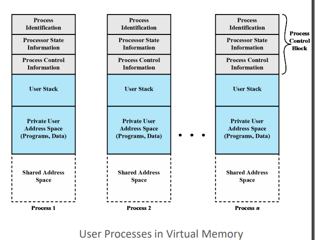

Compilation of all my lecture notes
toc:
- Computer System Overview
- Operating System Structures
- Process Description and Control
- Threads
- Concurrency: Mutual Exclusion and Synchronization
- Deadlock and Starvation
- CPU Scheduling
- Main Memory
- Virtual Memory
- Storage Management
- Security and Protection
- Exam Review
Computer System Overview
What Operating Systems Do
Components to a computer structure:
- user
- application programs
- operating system
- computer hardware
OS sits in between the user and the hardware, handling how the application programs interact with the hardware.
OS Goals:
- execute user programs
- convenient and easy to use
- not hard to use
- efficiently use hardware
user pov:
- want
- easy to use
- good performance
- secure
- don’t care about efficiency
Smartphones and tablets are good from the user pov since they are optimized for usability and batter life.
The touch screens and voice interactions allow for better usability.
Even though in reality the phone could be pretty wasteful when it comes to the resources.
Profesor’s Soapbox:
- we should be more concerned with the lack of privacy that comes with the convenience
- she doesn’t like the argument that if you don’t have anything to hide then you shouldn’t care
- “privacy is our right”
- she wants us to take into account privacy and security regarding user data
Embedded Computers:
- little/no user interface
- ex
- home devices
- motion sensor lights
- computerized water systems
- computerized heating system
- car computers
- numeric keypads
- presto scanner
- home devices
- run primarily without user intervention
System pov:
- OS must keep all users happy in the case of shared computers
- OS is the resource allocator and control program
- efficiently manage the execution of user programs
- I/O devices are important in this respect
- hard to manage and work with efficiently
Operating System definition
- no universally accepted definition
- “we define the operating system as we go”
- is a resource allocator
- manage all resources
- decides between conflicting requests for efficient and fair resource use
- is a control program
- controls execution of programs to prevents erors and imporoper use of the computer
- everything a vendor ships when you order an operating system is a good approximation but varies wildly
- the one program running at all times on the computer is the kernel which is part of the operating system
- everything else is either
- a system program that ships with the operating system
- or
- an application program
Mobile operating systems often include not only a core kernel but also middleware
- a set of software frameworks that provide additional services to application developers
kernel is the core of the system
not all computer systems have some sort of user interaction
Computer-System Organization

cpu talks to the memory in order to get instructions
memory is typically volatile so it loses all information once it shuts down
system bus:
- provides communication among processors, main memory, and I/O modules
Device controllers are things like the disk controller and usb controller.
There’s local memory on the controller that acts as a buffer storage.
the controller moves data between the peripheral devices and the buffer storage.
There are software versions of these drivers too.
Competing for Resources
CPU and controllers can execute in parallel, competing for memory cycles.
They both need to go through the memory
- cpu fetches instructions from memory
- I/O device sends information through memory
- modern computers use DMA (direct memory address) that we speak on later
Computer-System Operation
How does the processor execute an instruction?
There are registers inside of the cpu itself
- this is based off of the architecture (design) of the processor itself
- very fast storage to read and write to
- used to save, store, and use instructions
- very expensive, fast, and limited
Memory Address Register (MAR) specifies the address in memory for the next read or write
Memory Buffer Register (MBR)contains teh data to be written/read into/from memory
I/O Address Register (I/O AR) specifies a particular I/O device we’re working with
I/O Buffer Register (I/O BR) used for the exchange of data between an I/O module and the processor.
CPU is waiting for the inupt
Instructions always have to come from memory. It can only be loaded from the memory.
I/O doesn’t input instructions, it inputs/outputs data.
CPU can pull directly from IO device
Memory and I/O:
- memory is a set of locatiosn defined in sequentially numbered addresses
- each location contains a bit pattern that can be interpreted as either an instruction or data
- an I/O module transfers dtat from external devices to processor and emmory, and vice versa
Instruction Execution
A program to be executed by a processor consists of a set of instructions stored in memory.
The processor reads (fetches) instructions from memory one at a time and executes each instruction.
The processing required for a single instruction is called an instruction cycle.
Fetch and Execute is an atomic operation:
- If you fetch an operation then you can’t do anything else until you execute that operation
- they come together
Program halts if:
- processor turns off
- unrecoverable error occurs
- program instruction that halts the processor is encountered
- tell the processor to wait for an input or output
Instruction Fetch and Execute from CPU pov:
- processor fetches an instruction from memory
- program counter (PC) holds the address of the next instruction to be fetched
- PC is incremented after each fetch
- on to the next instruction
- unless the instruction loaded tells us to change the PC differently
- fetched instruction is loaded into the instruction register (IR)
- the processor interprets the instruction and performs the required action:
- processor-memory: data transfer
- Processor-I/O: data transfer
- Data processing: arithmetic or logic operations
- Control: an instruction may specify that the sequence of execution be altered.
Hypoethical 16 bit machine
opcode - operation code that tells the processor what to do
address - data needed
S - sign of the data (0 = +ve, 1 = -ve)

These are all displayed in hex

1:
- fetch instruction from
300 1940is loaded toIR1=001= load AC from memory940is where we’re grabbing from
- increment
PC - load
0003from940intoAC
Interrupts
An interrupt is a signal for the cpu to pay attention to the device.
You can process user inputs very quickly so that it doesn’t feel laggy.
Most IO devices are much slower than the cpu so it’s less efficient for the cpu to just wait on the IO device so it’s better for the IO device to just cut in whenever it needs to.
Most operating systems are interrupt driven, I/O devices will cut in whenever they need to so that the cpu doesn’t have to pause and wait on them.
lect 1 end
There are different kinds of interrupts:
- hardware and software
- whenever hardware or software wants to seek the attention of the processor
- hardware sends signal through a peripheral device to interrupt the processor
- software executes a specific instruction to interrupt the processor
- vectored and non-vectored
- interupt transfers control to a specific address which contains the interrupt vector
- the interrupt vector has the address of the ISR
- it’s like a low level database that tells you what to do for a given interrupt
- interrupt vector table contains addresses that inform the interrupt handler as to where to find the interrupt service routines (ISR)
- vectored: manufacturer of the processor predefines this vector address
- it’s hardcoded/built-in
- non-vectored: vector address is not predefined
- address of the required ISR for the interrupt is provided by the interrupting device
- interupt transfers control to a specific address which contains the interrupt vector
- maskable and non-maskable
- non-maskable: cannot be ignored
- reserved for events such as
- unrecoverable memory errors
- hardware failure
- system crash
- force shutdown or cutting power
- non-maskable, hardware interrupt
- needs to have the option to shutdown gracefully and minimize damage to hardware
- overheating
- heat sensors tell the processor to stop so that the heat can dissipate
- don’t ignore
- attend to immediately
- reserved for events such as
- maskable: can be ignored
- turned off by CPU before the execution of critical instruction sequences that cannot be interrupted
- non-essential for core system function
- used by device controllers to request service
- keyboard
- printer
- usually only ignored for a while
- could potentially be ignored forever
- almost never happens
- non-maskable: cannot be ignored
These different types are can overlap.
We might have a vectored, non-maskable, software interrupt or a non-vectored, maskable, hardware interrupt.
When the cpu is interrupted, it stops what it’s doing and transfers execution to a fixed location.
Fixed location usually has a starting address where the service routine for the interrupt is located.
The interrupt service routine executes.
After the routine completes, the cpu goes back to what it was doing before.
For the user program, an interrupt suspends the noraml sequence of execution.
When the interrupt processing is completed, execution resumes.
In the above image we see the I/O device making the request, sending it to the processor, then the processor processing the interrupt shortlythereafter then signalling that it’s done when it’s done.

Instruction Cycle with Interrupts
Interrupt stage is added to the instruction cycle.
At the execute stage, the processor checks to see if any interrupts have occured.
If none, proceed to fetch stage as usual.
Otherwise, the processor executes an interrupt handler routine instead of going to the fetch stage continue the program execution. After that it continues.
An interrupt handler routine is generally part of the OS.
The routine:
- determines the nature of the interrupt
- performs whatever actions are needed
- e.g. find out what I/O module generated the interrupt and brach to a program that will write more data out to that I/O module
- allows the processor to continue executing the uesr program after it finishes
Program Status Word
An interrupt can trigger lots of events in the processor hardware and software.
Program Status Word (PSW) contains status information about the currently running process:
- memory usage
- codes
- status information
- interrupt enable/disable bit
- kernel/user-mode bit

We cover this in more detail later on.
Flow Control With and Without Interrupts
Let’s take an example of flow control without interrupts.

the black dotted arrow shows how the execution flows
1, 2, 3 refer are segments of code that don’t involve I/O
The write calls involve I/O and call an I/O routine/program pictured on the right:
4prepares for the actual I/O operation- then there’s the I/O command
5complete the I/O operation- then it ends and we return
The write calls call to an I/O routine
Suppose now there are interrupts with short waits.

Now we see an interrupt in the segments 2 and 3 dividing them into 2a&2b and 3a&3b respectively.
At the dividing points we have the execution move to the interrupt handler before going back to the user program.
Suppose now there are still interrupts but now with long waits
The interrupts no longer occur during the segments that don’t involve calling to another routine.
Instead they happen when the user program calls to another routine, the write calls.
So above we went over different techniques for handling I/O operations
(a): programmed I/O(b)and(c): interrupt-driven I/O
There is another third technique that we can go over later today called direct memory access (DMA)

Using interrupts it takes less time and is more efficient as the processor doesn’t need to idle.
We have to be aware of the overhead as we get faster however.
A cpu core can execute 1 instruction at a time. Multi-core CPUs can execute multiple cores at a time. Multi-threading adds to this.
In order to utilize this we need to program in a way to take advantage of parallel execution.
Multiple Interrupts
Suppose there is an interrupt during the processing of another interrupt, we can either:
- disable interrupts while an interrupt is being processed
- hard to work with if there’s un-maskable interrupts
- use a priority scheme
With disabled interrupts we might have an interrupt while we’re handling another interrupt.
We finish handling the first interrupt before attending to the other interrupt.

This does not take into account relative priority or time-critical needs.
With prioritized interrupts we can interrupt the interrupt handler in order to handle a more important interrupt.

Interrupt Y has a higher priority than interrupt X which results in the execution we see above.
Example
3 I/O devices in order of least to greatest priority:
- printer - priority 2
- disk - priority 4
- comms - priority 5
timeline t=x:
- 00: begin
- 10: printer interrupt
- 15: comms interrupt
- 20: disk interrupt
each interrupt lasts 10 time units
how will these interrupts be executed?
my answer:
- 10: begin printer interrupt
- 15: begin comms interrupt
- 25: end comms interupt
- 25: begin disk interrupt
- 35: end disk interrupt
- 40: end printer interrupt
Storage Structure
Von Neumann Architecture
Main Memory
CPU can only load instructions from memory so programs must be loaded into memory in order to run.
Computers run most of their programs from rewritable memory, called main memory (aka random access memory(aka RAM))
Main memory is volatile (loses everything when powered off) and is commonly implemented in a semiconductor technology called dynamic random-access memory (DRAM).
ROM, EPROM, and EEPROM
bootstrap program is loaded at power-up or reboot:
- the computer is checking itself
- this is also known as post
- Initializes all aspects of the system
- all your bios shit
- Loads operating system kernel and starts execution
- We can’t store it to the RAM, instead
it is typically stored in ROM or
EPROM, and is generally known as
firmware
- the rom, eprom, or eeprom are non-volatile so we put the bootstrap there

ROM
read only memory.
non-volatile
data is written there permanently during the manufacturing.
Used for storing firmware and software that does not need to be changed ferquently
ex:
- BIOS
- embedded system firmware
EPROM
EPROM (Erasable Programmable Read-Only Memory): only reprogrammable after being erased by exposing it to ultraviolet (UV) light.
Commonly used in early embedded systems and microcontrollers.
EEPROM
EEPROM (Electrically Erasable Programmable Read-Only Memory): A type of memory that can be reprogrammed electrically, without the need for UV light.
Can be reprogrammed in place without the need for removal from the circuit.
Used in applications where data needs to be updated or modified periodically, such as in configuration settings.
Secondary Storage
we want programs and data to reside in main memory permanently but main memory is too small (to get a reasonably large size to store data permanently) and it’s volatile.
We use non-volatile secondary storage as an extension of the main memory.
Hard-disk drives (HDDs) and nonvolatile memory (NVM) hold onto things before we load them into memory.
HDD
- metal or glass platters covered with magnetic recording material
- head that moves and disk that rotates to read off of the disk
- physical head moves
Solid-state disks (SSD)
- faster than HDD
- is not limited by the disk head movement
It’s more accurate to think of it as storage in addition to being an extension of the main memory as opposed to just being an extension of the main memory.
Non-volatile memory (NVM)
- harder than hard disks
- becoming more popular
prof uses external ssd but doesn’t know about nvme ssd and sata ssd??
Tertiary Storage
Slow and large.
Used for special purposes, typically as a backup of material stored on other devices.
CD-ROM or blu-ray
magnetic tapes.
We still use magnetic tapes even though prof doesn’t think we do since last she used them was in '97. What a fucking world we live in. Still using magnetic tape.
Storage Hierarchy
going down the hierarchy we get cheaper, larger, and slower memory that is accessed less and less frequently by the processor.
Caching
Used at many levels in a computer from the most basest of hardware to the most frivolous of software.
If we want to use information from a slower piece of storage then we will copy that information to a faster piece of storage.
In the above instance we would describe the faster piece of memory as our cache.
We copy things from the secondary storage (the drives) to the main memory (ram) in order to have programs execute faster. The main memory is the cache.
When we want to grab information we check the cache to see if it’s there
- if it is, we use it directly from there
- if not, we copy the data to the cache from the other storage and then use it there
Hit Ratio:
- fraction of all memory accesses that are found in the faster memory
- ex
- processor has access to two levels of memory
- lvl 1 - 1,000 bytes and access time of T1=0.1 μs
- lvl 2 - 100,000 bytes and access time of T2=1 μs
- Suppose 95% of the memory accesses are found in the cache
- For H=0.95, the average time to access a byte = (0.95) (0.1 μs) + (0.05) (0.1 μs + 1 μs) = 0.095 + 0.055 = 0.15 μs
- We want to keep the hit ratio high and the access time(s) low
I/O Structure
A large portion of operating sytem code is dedicated to managing I/O:
- important to keeping system reliable
- the varying nature of devices makes this a complex task that requires a lot of code
- cameras, mice, keyboards, printers, fax machines, scanners, and all manner of devices are all classified under I/O device but will all have different needs
When the prcoessor encounters an instruction relating to I/O, it executes that instruction by issuing a command to the appropriate I/O module.
Possible techniques for I/O operations (2 of which covered previously here):
- programmed I/O
- interrupt-driven I/O
- Direct Memory Access (DMA)
We previously mentioned that programmed I/O is very inefficient as it would require the processor to wait on the I/O devices as no device can keep up with the processor.
Interrupt-driven is fine for moving small amounts of dat but can produce high overhead when used for bulk data movement. Burst memory movement is pretty good for all of this Remember that all operating systems nowadays are interrupt-driven.
But we run into the problem of I/O requests running into other I/O requests.
We need more efficiency which is where DMA comes in.
Direct Memory Access Structure
DMA is used for high speed I/O devices capable of transmitting info at close to memory speeds.
Blocks of data is transfered from the buffer storage to the main memory by the device controller w/o the cpu intervening.
Only one interrupt is generated per block, rather than one interrupt per byte as is the case in interrupt-driven I/O.
A von Neumann architecture:

DMA is performed by a separate module on the system bus or incorporated into an I/O module.
When the prcessor wishes to read or write data it issues a command to the DMA module containing:
- whether a read or write is requested
- address of the involved I/O device
- starting memory location for the read/write
- number of words to read/write
The processor returns to it’s own work while the I/O operation is contrinued on by the DMA module.
DMA transfers the block one word at a time, directly to/from memory w/o processor.
Once complete, DMA sencds interrupt signal to the processor.
Processor is only involved at the beginning and end of the transfer makig it far more efficient than interrupt driven or programmed I/O.


Operating System Structures
We look at generic operating system design in this course.
Different designers have different paradigms and ideas.
POSIX is used for linux and macOS
Android uses different things.
The fundamentals are all the same but we may have different names for things and different styles of schedules.
For specific issues we may look at examples of how different operating systems do things
Computer System Architecture
we can categorize a computer system according to teh # of general-purpose processors used:
- in contrast to application specific processors
- found less often or even not at all
- single-processor systems
- multiprocessor systems
- clustered systems
- different machines that work together
general purpose processor:
- type of microprocessor designed to handle a wide range of takss and applications
- the typical processor
single processor system:
- old days
- most systems used to use only one cpu
- a core is a basic computation unit of the cpu
- a unit that can execute instructions
prof's dad used to work at msx
that was her first computer
it was popular in the middle east and asia
there was a huge pyramid scheme surrounding msx
she remembered playing hangman on it with her brother
hunt and peck typing to code up hangman.
they had to reprogram hangman everytime they wanted to play since they didn't know how to save shit or I think they couldn't idk.
she saw the rise of the era of the 1.44 mb 3.5 inch floppies
if we had a lab this would've been so cool to listen to but rn idk
Most systems have special-purpose processors as well.
We might have graphics processors and all that
multiprocessor:
- these now dominate the landscape of computing
- aka parallel systems, tighly-coupled systems
- advantages:
- increaseed throughput
- increased reliability - fault tolerance
- 2 types of systems
- symmetric multiprocessing
- each processor performs all tasks
- processors share memory
- asymetric multriprocessing
- each processor perofrms a specific assigned task
- symmetric multiprocessing

Symmetric:
- most common and what we’re workginw tih
- each processor has a cpu w/ their own registers
- they also have their own private/local cache
- All processors share physical memory over the system bus
Nprocesses can run if there areNCPUs
multicore systems can be more efficient that multiple chips with single cores because on-chip communication is faster tahn between-chip communications
each core effectively acts as a separate cpu in terms of execution (there are some caveats) and can more quickly communicate with one another.
One chip w multiple core uses significantly less power than multiple single-core chips.
There’s always a lot of overhead that comes in the form of inter-process and inter-program communication as well as resource allocation. These problems feed back into one another as they need to communicate about the resource allocation. It’s a big fucking mess
Dual-Core design
each core has it’s own reigster set and it’s own local chache often referred to as L1 cache
The level 2 or L2 cache is local to the chip and is shared by the two processing cores.
multicore processor with N cores appears to teh operating systems as N standard CPUs
Clustered Systems:
- 2 or more individual systems (known as nodes) joined together
- each node is typically a multicore system
- no shared memory
- loosely coupled systems
- usually there is shared storage via a Storage-Area Network (SAN)
- usually for very large networks
- prof used to use a lot of SANs back in her old job
- communication at a hardware and software level
- there is clustering software that shows the status of every node and all that
- at the hardware level there is a sort of mini-operating system
- maybe not too important but cool
- all cloud servers are clustered so that any server going down is invisible to the user
- if you ping a server that goes down then you might not even notice as the ping just gets redirected
- all linked together to communicate via a Local-Area Network (LAN)
- provides high availability and fault tolerance service which survives failures and provides increased reliability which is crucial in many applications
- financial applications
Asymetric clustering:
- one machine in hot-standby mode while the other is running the applications
- if server fails then standby becomes the active
symmetric clustering:
- multiple nodes running the applications and monitoring each other
- more efficient
- all active at the same time
Some clusteres are for high-performance computing (HPC)
- applications must be spciallly writeten for use parallelization
Prof told us about PS/2, hdmi, dvi, and other ports and allat
Going over the anatomy of the motherboard.
The old university monitors still use vga and all of that.
Prof tells us how to intsall cpu and ram.
Operating System Operations
Multiprogramming and Multitasking
Allows the operating system to run multiple programs
Multiprogramming (batch system) needed for efficiency:
- single user cannot keep CPU and I/O devices busy at all times
- multiprogramming orgnanizes jobs (code and data) so CPU always has one to execute
- a subset of total jobs in asystem is kept in memory
- one job selected and run via job scheduling
- when it has to wait (for I/O for ex), OS switches to another job
multitasking is a logical extension in which CPU executes multiple processes by switching among them very quickly.
Interactive computing.
multitasking
- each user has at least one program executing in memory, a process
- if several jobs are ready to run at teh same time then we scheudle jobs for the cp
- if processes don’t fit in memory then we swap them in and out of memory in order to run
multiprogramming only can only execute one program at a time meanwhile all other processors are waiting for the processor.
With multiprocessing, more than one process can be running simultaneously, each on a different processor.
Both of these let us run programs “at the same time”.
Dual Mode
Dual-mode operation:
- OS able to protect itself and other system components
- 2 modes
- user mode
- kernel mode
- mode bit is provided by hardware
- distinguish between system running user or kernel code
- some instructions are only executable in kernel mode
- privileged instructions
- system call changes mode to kernel mode and return from call resets it ot user mode
CPUs increasignly support multi-mode operations
- Virtual Machine Manager (VMM) mode for guest VMs
I’m thinking most of the operating system shit lives in kernel mode.
Transition from User to Kernel Mode
Operating system must always be in control of the CPU.
The user program can’t get stuck in an infinite loop or fail to call system services.
We use a timer to stop that from happening. When the timer runs out it interrupts the computer. The time length can either be fixed or variable. No matter what we are able to regain control or terminate the program that goes over time.
There are different timers.
For example on linux systems we can observe different types of timers based on how the kernel is configured, what kind of machine it’s on, and what the architecture of the components are like. We can configure a certain number of interrupts per second for example and it’s a HZ value.
Crucial takeaways:
- a timer can be used to prevent a user program from never returning control to the operating system
- kernel mode has many different names
- supervisor mode
- system mode
- privileged mode
Resource Management
Remember that the operanting system is a resource manager.
File space, i/o, processes, memory, chache, etc. all managed by the OS
Process Management
Process management:
- a process is a program in execution
- program is passive entity
- process is active entity
- unit of work within the system
- once we run a program we have a runtime environment
- allocated area in the memory where we will load in the code and text and stack and other values/variables that we need for the process
- process needs resources to accomplish its task
- CPU cycles
- memory space
- I/O
- files
- initialization data
- upon termination, resuable resources are reclaimed
Threads and Processes:
- threads can be single-threaded or multithreaded
- single-threaded
- one program counter specifying the location of the next instruction to execute
- process executes instructions sequentially
- multi-threaded
- one program counter per thread
- requires a multicore processor, each core works on a different thread
- most processes aren’t multithreaded
Issues to Consider with Process Management
- synchronization
- coordinate processes that need to share data
- mutual exclusion
- how to make processes or users share a resource at the sam etime
- deadlocks
- >=2 processes can’t continue b/c they are waiting for the others to do something
- livelock
- >=2 processes continuously change their states in response to changes in other other process(es) without doing anything useful
- “you go first” “no you go first” “no you go first” “no you go first” “no you go first” “no you go first” and then we do nothing forever
- starvation
- process is overlooked indefinitely by the scheduler
- it can proceed but is never chosen
We’re going to be looking at the pseudocode and underlying theory for programs that do this stuff correctly.
After that we can look at some real, runnable code to see what’s really going on.
There’s a lot of groundwork that needs to be done until we can even understand what the demos we’re going to get are doing when we run them.
Activities connected to process management:
- creating/deleting user and system processes
- suspending/resuming processes
- providing mechanisms for
- process
- synchronization
- communication
- handling deadlocks
- process
Memory Management
All or part of the instructions and data needed for a program in the memory in order to execute the process.
Memory management optimizes cpu utilization and response to users.
What’s in the memory and when.
Memory Management Activities:
- keep track of what memory is being used by who
- decide which processes (and their parts) and data to move in/out of memory
File-System Management
most visible component
uniform, logical view of information storage
Abstracts from the physical properties of its storage devices (stores 1s and 0s and engravings and shit) to define a logical storage unit - file (.c, .java, .py, .txt, .exe files)
Each storage medium is controlled by a device with various processes
- access speed
- capacity
- data-transfer rate
- access method
- sequential or random
Activities:
- organize files into dirs
- manage access perms
- os activities
- creating/deleting files/dirs
- primitives to manip files and dirs
- mapping files onto secondary storage
- backup files onto stable(non-volatile) storage media
Mass-Storage Management
storing things like code and data when not in memory
Long term storage.
Very important to manage properly
Speed of computer operation hinges on dis subsystem and its algos. How do we read and write in an efficient way
SSDs have semiconductor tech that’s really good but still very expensive so we still have to take other forms of storage into account.
Some storage doesn’t even have to be fast, just very long lived, large, and cheap.
Optical drives and magnetic tapes fall under the above category but they still need to be managed by OS or applications.
Q: When I move a file to another computer, how does the other computer know what kind of file it is?
A: Every operating system has their own system to manage files. But there are many universally used ways of interpreting the files. The physical files themselves are the same so we just have to worry about the interpretation. Some files are platform specific (`.msi` = microsoft installer, `.deb` = debian package file) and they can't be interpreted properly by machines with the wrong operating system
OS Activities:
- (un)mounting
- (dis)connect to storage medium
- free-space management
- if you want to write, where do you go to write?
- do we even have enough space to write?
- storage allocation
- disk scheduling
- partitioning
- protection
Caching Management
Recall that cache is a faster piece of storage that we place frequently accessed data that we would ordinarily store in slower storage.
Caches have limited size so we need to manage what we store in their and when.
The size and replacement policy can greatly impact performance.

CPUs have cache that the OS doesn’t really mess with but there’s other forms of cache that the OS is concerned with
Access time:
- time needed to arrive at the byte we want to read/write
- takes time to do the calculation and find the exact address
- the time the cache tech needs to arrive at the right location
Bandwidth:
- speed of the read/write
- a unit of data per second, typically megabytes
Cache Coherence

There might be multiple processors with their own caches but there cuold be some incorrect execution that results in 2 or more copies of a cache block to exist in 2 different processors’ caches
This is a problem when we try to write back that cache.
I/O Subsystem Management
OS is meant to hide particularities of hardware devices from the user
responsible for:
- memory management of I/O
- buffering - temp storage of data while being trasnferred
- caching - storing parts of data in faster storage for performance
- spooling - overlapping of output of one job with input of other jobs
- general device-driver interface
- drivers for specific hardware devices
Everything not under processor or memory management can be thought of as being I/O in general but in this course we think of things more granularly
Q: Two important design issues for cache memory are
A: Size and replacement policy
Q: What is the unit of work in a system?
A: Process
Operating System Services
OSes provide an env to execute programs and services for users and other programs
2 types of OS Services with different goals:
- helpful to user
- efficient operation of the system itself
Services for the system and services for the user
For the User
The user does not have to be aware of how all of this works
User Interface:
- almost all operating systems have a User Interface (UI)
- types:
- Command-Line (CLI)
- Graphical User Interface (GUI)
- touch-screen

Program Execution:
- load program into memory
- run program
- end execution
- normally or abnormally and give error
I/O ops
File System Manip:
- read/write files
- create/delete dirs
- search for files/dirs
- list file/dir info
- manage perms
Communications:
- exchange info within or without the computer using a network
- shared memory or message passing via packets moved by the OS
Error Detection:
- constantly aware of all errors and what to do
- errors in CPU, memory, I/O devices, and programs
- give debugging facilities
Q: What service is it when we force quit a program?
A: Things can go wrong on the software level, hardware level, or any number of other levels (within those levels). The best thing to do is dive into the debugging hole. If you're at a low level then you can see each instruction execute one at a time. EAX register, RAX register available to you. If you're at a higher level then you'll likely just get an error code to work it out.
It depends on what is happening.
For the System
Resource Allocation:
- same as before
- make sure no one can access what they shouldn’t be able to
Logging:
- keep track of what’s being done and by who with what resources
Protection and Security:
- control information that is stored and used
- concurrent processes should not interfere with each other
- protection ensures that all access to system resources are controlled
- security
- outside users require authentication
- passwords
- biometrics
- physical key - yubikey
- 2FA
- defend against external I/O devices from invalid access attempts
- outside users require authentication
- once users are allowed in the OS looks on the access control list (ACL) to see what the user is allowed to do
System call interface is the boundary between user programs and operating system services.
Yes
Is the GUI the most common UI?
It depends. CLI might be more common depending on what you’re doing.
There’s probably more CLIs kicking around in total but people mostly use GUIs
Touch screen is used on mobile a lot
yes
User Operating System Interfaces
CLI or command interpreter allows direct command entry
- implemented by kernel or some system programs
- sometimes multiple different kinds of interpreters implemented
- known as
shells - shell is loaded into run time env and we execute from there
- known as
- sometimes commands built-in, sometimes just names of programs
- in the latter case then we don’t have to modify the shell itself to add new features
- the shell is just a powerful program that can run other programs directly and access the resources
- we have the latter case a lot in our linux systems, even if we think things are built in they’re really just programs in the
/bin/directory
- in the latter case then we don’t have to modify the shell itself to add new features
- shell is merely the interpreter that you put in commands, the OS looks at what to do with that command, and runs the program
- access to the shell is access to the whole computer
prof loves security, very passionate
GUI:
- user-friendly desktop metaphor interface
- usually mouse, keyboard, and monitor
- icons represent files, programs, actions, etc
- invented at Xerox PARC
- Big developments in GUI designs come from open-source projects
- KDE - K Desktop Environment
- GNOME desktop by GNU project
- both run on linux and unix systems
- source code readily available for reading, modification, and even contribution under specific license terms
Touchscreen:
- impossible/undesired mouse
- gesture based
- virtual keyboard
- uses a lot of voice commands
Remember that there are many different kinds of shells to choose from
System call
Provides a programming interface to the services provided by the OS
System calls are typically written in a high-level language (C or C++).
Mostly accessed by programs via a high-level Application Programming Interface (API) rather than direct system call use
API specifies a set of functions that are availbe to an application programmer
params passed to functions to return expected values
3 most common:
- Win32 API for Windows
- POSIX API
- UNIX, Linux, Mac OS X
- Java API for Java Virtual Machine
We might use system calls for:
- copying contents of one file to another file
Types of System Calls:
- Process control
- File management
- Device Management
- Information Maintenance
- Communications
- Protection
System calls are run in kernel mode
Process Description and Control
What is a Process
Computers used to only execute 1 program at a time. This program had complete control of the system and access to all it’s resources.
Now they can have multiple programs loaded into memory and executed at the same time.
With that evolution we needed more control and compartmentalization of running programs.
Thus came the birth of the process.
A process is:
- a program in execution
- the unit of owrk in a modern computing system
- an entity that can be assigned to a processor and executed on a processor
- a unit of activity characterized by
- the execution of a sequence of instructions
- having a current state
- having an associated set of system resources
2 essential components of processes:
- program code
- text section
- set of data associated with that code
- data section
We may be more precise later
A process can be uniquely characterized by anumber of elements:
- identifier
- unique identifier associated w/ process to distinguish from all other processes
- pid - process ID unique to a process
- no 2 processes have the same pid
- state
- if a prcess is currently executing it is in the
runningstate
- if a prcess is currently executing it is in the
- priority
- priority relative to other processes
- what processes can it interrupt and what processes can interrupt it
- program counter
- the address of the next instruction in the program to be executed
- memory pointers
- includes pointers to the program code and data associated witht he process plus any memory blocks shared with other processes
- context data
- data that are present in the registers during execution
- i/o status information
- outstanding i/o requests
- assigned devices
- list of files used in the process
- accounting information
- may include
- amount of processor time
- clock time used
- time limits
- helps us log activities
- find out who/what accessed things, when and why
- may include
This is all very general, every OS has their own implementations but most every OS is going to have these things just under different names.
All of the above is stored in the process control block (PCB):
- created and managed by the operating system
- makes it possible to interrupt a running process and later resume execution as if the interruption had not occured (context-switching)
- context-switching is what this course is all about
- trying to keep the processor busy and feed it new processes in order to increase the performance and allat
- the speed of the processor is the speed limit of the computer, no one is faster than the processor. less of a road speed limit and more of a physical speed limit, like the speed of light
- context-switching is what this course is all about
Each process has only one program counter and thread for now. We talk about multithreading and parallelism later on.
Process States
Process Trace

Trace:
- Characterize the behavior of an individual process by listing the sequence of instructions that execute for that process
- set of instructions for a process
- show how the traces of the various processes are interleaved
Example

We have a small dispatcher process that switches the process from one process to another.
Process Trace Execution

There’s a limit to how long a process can stay in the processor.
The above image shows how the dispatcher switches between the different processes in the previous image to the one above.
Simple Two-State Process Model

Processes change state as they execute.
With a 2 state model we have 2 states:
- running
- the process is being executed
- not running
- not being executed by processor

We can have the processes in a queue stored in the ram and we cycle through them, kicking a process out of the processor and back into the queue.
When we do that we set it’s state to the Not Running state.
When we start executing the new process we get to set that process’ state to Running.
Note: the entries in the queue are links to the process’ PCB as opposed to the whole process itself.
The queue is a first-in-first-out list and the processor operates in round-robin fashion on the available processes.
Round-Robin: each process in the queue is given a certain amount of time, in turn, to execute and then returned to the queue, unless blocked.
I think every prof seems to have a different definition of "round robin"
Operations on Processes
We need to be able to _____ processes:
- create
- terminate
Creation
4 reasons to create a new process:
- new batch job
- OS is provided with a batch job control system
- operating system is given a ton of jobs and has to execute them all in the proper priority
- interactive logon
- system d, inet, etc
- tons of processes start up to serve the user
- created by os to provide a service
- when the user does stuff they will often start processes, withuot the user having to wait
- send information to printers
- spawned by existing process
- opportunity to exploit parallelism or for the purposes of modularity
- modular design will allow any user to take advantage of the work that the process is doing
- processes made to support other processes
On Spawning:
- parent process creates child processes forming a tree of processes
- they may or may not be communicating with one another and/or sharing resources
- all, some, or none of the resources are shared between the parent and child process
- the parent and child may execute concurrently or the parent may wait until the child terminates
- it all depends on what the purpose for the spawning was and what the processes were designed to do
fork
In unix-like OSes,
the creation of a child process is established through a system called fork
fork system call creates a copy by duplicating the parent process
- returns the child process ID to the parent and returns 0 to the child process
- the child and parent processes know each others PIDs

child process can execute a different program using exec system call
child can’t terminate until the parent collects the output of the child.
parent gives a wait command to the child and does the collection.
While the child waits then the child is known as a zombie.
If the parent dies then the child becomes an orphan.
fork can be used in a program written by the user.
There are a variety of different reasons why you would want to fork so there’s many things that the child and parent processes can do together or separate. We could see that they duplicate and continue to execute the same thing or they’ll duplicate and start doing different things and receiving commands from the parent program.
Mircrosoft doesn’t like fork()
- fork is insecure
- fork gives the child more access than it needs since it copies everything by default
- defies the least privilege principle
- give the least privilege possible to get a job done in order to protect the user and system
- programs that fork but don’t exec render address-space layout randomisation ineffective, since each process has the same memory layout
fork is fast and ha 0 parameters while windows’ CreateProcess has many parameters.
We also don’t run into the error of running out of memory.
prof really likes this paper and found it very interesting.
CreateProcess
Windows doesn’t have a direct equivalent to fork.
CreateProcess is used by Windows API
Spawn vs Fork
- fork
- existing process creates identical copy of itself
- spawn
- more general term for creating new process
- implemented in various different ways depending on OS and programing env
- doesn’t necessarily involve duplicating the existing process
- spawned process may or may not have a relationship with the parent process
- spawned process can be a different program altogether
Tree of Processes in Linux

pstree
prof:

mine:
Termination
A process terminates when it finishes executing its final statement and askss the operating system to delete it by using the exit() system call
all the resources of the process (physical and virtual) are deallocated and reclaimed by the operating system.
Batch job should include a halt instruction or an explicit os service call for termination. Halt will geernate an interrupt to alert the os that a process has completed.
Interactive applications (browsers and shit used by user) are terminated when the user decides typically.
parents can terminate children
WOW:
not reading allat but pretty cool :thumbsup:
Five-State Process Model
Note: THis is on the assignemnt (Thanks Cate)
USing a single queue the dispatcher could not just select the process at the oldest end.
Dispatcher needs to find a process that is not blocked and that has been in the list for the queue for the longest.
Turn not Not Running into Ready and Blocked
State process diagram

States:
- new
- newly created process not yet admitted to the pool of executable processes by the OS
- ready
- prepared to execute when given opportunity
- running
- process that is currently being executed
- blocked
- unix-based: waiting
- process cannot execute until some event occurs such as completeion of an I/O operation
- exit
- unix-based: terminated
- process released from pool of executable processes by the OS
- process has been halted or aborted for whatever reason
Transitions:
- null -> new
- new process is created to exec program
- new -> ready
- os is prepared to take on additional process
- ready -> running
- dispatcher dispatches the process
- OS chooses ready process to run
- running -> exit
- process is terminated by the OS if the process indicates it has completed or if it aborts
- runningright arrow ready
- running process has reached teh maximum allowable time for uninterrupted execution
- no longer your turn on the xbox
- runningright arrow blocked
- process requrests something for which it must wait
- blockedright arrow ready
- process in blocked state is moved to ready state when the event for which is has been waiting occurs
remember that we never have blocked to running.
still not perfect but more later
Example
while the processses are simply ready but not running, the dispatcher is running in order to go to dispatch them

There are 2 queues:
- ready queue
- blocked queue
So when we ready something up it actually goes into a queue and when something gets hit with an event wait it gets put into a blocked queue.
When a process
- is admitted to the system right arrow admit to requdy queue
- is chosen to run right arrow select from ready queue
- has to wait right arrow send to blocked queue
- times out right arrow send to ready queue again
- finishes right arrow release
In the absence of any priority scheme this can be a simple FIFO queue (round-robin). Otherwise we could use something like a priority queue.
When an event occurs, any process in the blocked queue that has been waiting on that event only is moved to the ready queue.
The problem is that we have to scan the entire blocked queue which could have 100s or 1000s of blocked processes.
We can remedy this with the use of multiple blocked queues

For each event that will cause an interrupt we will make a queue for it that way we don’t have to scan through the whole queue to find a process that corresponds to the event.
Suspended Processes
Problem - it will become common for all of th eprocesses in memory to be waiting for I/O, and for the processor to become idle.
- there’s only so much memory space to store so many processes
- we can pretty easily fill up the memory with all the processes and leave the processor idle since it only really works with shit in the memory.
Solution - swapping
- move part or all of a process from mai memory to disk
- it’s a very specific part of the disk that’s allocated for the memory to work with
- “there is a specific page file dedicated by the operating system”
- this is like the linux swap
The only problem is how do we do that?
We add another state to our process model
When the OS swaps one of the blocked processes out on to the disk we put it into a suspended queue:
- a queue of existing processes that have been temporarily kicked out of th emain memory or suspended
the os then brings in another process from the suspend queue or it honors a new-process request
execution then continues withthe newly arrived process

So now when we block a process from there it can either go back to the ready queue or get sent to the suspend queue.
When it gets sent to the suspend queue then it gets sent to the disk to make more space in the memory.
Once it’s in the suspend queue, we can activate it again.
So there are now 4 ways to get a process into the ready queue
- a newly admitted process
- a proces times out
- a blocked process is unblocked thanks to the event it was waiting on occuring
- a suspended process is selected to become active once more
If there is nothing in the ready queue and we’re waiting on blocked processes then we will start suspending processes to swap out of main memory so that we can admit new processes or activate one from the suspend.
It’s always preferrable to activate a suspended process.
The swap is always available - it is built into the architecture - and there’s always labels for each state.
When the OS performs a swapping-out operation, it has 2 choices for selecting a process to bring into main meomry:
- admit a newly created process
- bring a previously suspended process(preferred)
problem:
- all suspended processes were blocked when they were suspended
- which one do we bring back?
Each process in the suspend state was originally blocked on a particular event, something tha twe accounted for with the use of multiple queues. We also know that once that event is over we know that the processes in its corresponding queue are no longer blocked.
We want to make another state for suspended processes
For the processes in the secondary memory we’re able to have a ready and blocked queue for the suspended.
When we hear/read “suspend” then we think of the disk.
Blocked right arrow Blocked+Suspend:
- if there are no
Readyprocesses then at least one blocked process is swapped out to make room for another process that is not blocked.
Blocked+Suspend right arrow Ready+Suspend:
- a process was waiting for an event
- the event finishes
- the process is no longer blocked but it’s still suspended so it remains in the disk space but gets sent to a suspended ready queue
Ready+Suspendright arrow Ready:
- when there are no
Readyprocesses the OS will need to bring oen in to continue execution
Readyright arrow Ready+Suspend:
- to free up a sufficiently large block of main memory
- we have a ton of processes that are ready.
Runningright arrow Ready+Suspend:
- the OS is preempting the process because a higher-priority process on the
Blocked+Suspendqueue has just become unblocked - something higher priority just got unblocked and we need to execute on that one now instead
- the os could move the running process directly to the
Read+Suspendqueue and fre some main memory - process preemption occurs when an execution process i interrupted by the processor so that another process can be executed
Newright arrow Ready+Suspend:
Newright arrow Ready:
We could add more states but then there’s more work involved in changing between states. There are more states in different designs however.
Q: How do we decide wether a New process goes straight to Ready+Suspend or Ready?
A: we prefer to send a new process to the suspended queue. THe OS will prefer grabbing from ready suspend. Very rare that we will send something straight to ready since that would mean that the suspend is empty as well so there would be no point in sending it there first and wasting compute time on switching
A suspended process
- non immediately available for execution
- all info sitting on secondary memory instead of main
- process was placed in a suspended state by
- itself
- a parent process
- OS
- suspended in order to prevent execution
- may or may not be waiting on an event
- process may not be removed from this state until the agent orders the removal
- reasons for suspensions
- swapping
- other OS reason
- illegal memory access
- usually terminates in that case
- buffer overflow
- illegal memory access
- interactive user request
- debugging
- want to use resource
- minimizing applications or switching off of tabs so we don’t really need the program working
- timing
- parent process request
Process Description and Control
In a multiprogramming env there are several processes that have been created and exist in virtual memory.
What info doe sthe OS need to control processes and manage resources for them?
OS constructs and maintains tables of information about each entity that it is managing:
- memory tables
- I/O tables
- file tables
- process tables
Memory Tables
main = real
secondary = virtual
we use memory tables to do:
- allocation of main meory to processes
- allocation of secondary memory to processes
- any protection attributes of blocks of main or virtual memory
- which processes may access certain shared memory regions
- prevent programs from accessing main or virtual memory that it’s not allowed to
- any information needed to manage virtual memory
I/O Tables
used by the OS to manage the I/O devices and channels of the computer system
at any given time, an I/O device may be available or assigned toa particular process
OS needs to know the status of the I/O operation and the location in main memory being used as the source or destination fo the I/O transfer
File Tables
Provide information about the:
- existence of files
- location on secondary memory
- current statwus
- other attribs
may be maintined by a file management system (windows NTFS, linux/unix FAT) or the OS based on different operating system
Process Tables
Must be maintained to manage processes
References memory, I/O, and files directly or indirectly in the process tables to show what the process needs/uses
when the OS is initialized it must have some access to some configuartion data that define the basic environment
- all the info required to build out the tables
- everything you can see and view in the bios
- I think anyways
Process Control
to manage and control a process, the OS must know
- where the process is located
- the attribs of the process that are necessary for its management
- basically everything in the PCB
What is the physical manifestation of a process?
a process must inclue:
- a program or set of programs to be executed
- a set of data location for local and global variables
- stack that is used to keep track of
- procedure calls
- parameter passing between procedures
- a number of attributes that are used by the OS for process control (Process control block)
We refer to this as the process image
Process Layout in Memory

The stack goes from higher to lower addresses while the heap grows from lower addresses to higher addresses.
Process Location
location of a process image will depend on the memory managemnt scheem being used
At any given time parts of the process image can be both in the main and secondary memory
so we need process tables maintained by the OS to show the location of each page of each process image
Process Attributes
info resides in a process control block
there are 3 general categories
- process identification
- processor state information
- process control information
process identification:
- each processor gets a unique numeric identifier
- PID
- many of the bales controlled by the OS may use process identifiers to cross-reference process tables
- interprocess communication uses PIDs to determine who is who and where
- PIDs let us see who are parent and descendent processes
- the parents have the child PIDs and the children have the parent PID
Process State Information
- what is the current state of the process
- consists of the contents of processor registers
- registers on the cpu itself, very fast
- nature of registers involved depend on the design of the processor but typically
- user-visible registers
- control and status registers
- stack pointers
- all processor designs include a register or set of registers often known as the program status word (PSW) that contains condition codes plus status information
- EFLAGS registers is an example of a PSW used by any OS running on an x86 processor


Process Control Information
- the additional information needed by the OS to control and coordinate the various active processes

Role of the Process Control Block
- most important data structure in an OS
- contains all info needed by OS about process
- blocks are read and/or modified by virtually every module in the OS
- the set of PCBs define that state of the OS

Process Control
Typical mangement functions:
- creation and termination
- scheduling and dispatching
- switching
- synchronizationand support for interprocess communication
- mangaement of PCBs
we’re going to be looking at a lot of these.
Creation
OS decides to create a new process
- assign a unique PID to the new process
- allocate space for the process
- initialize the process control block
- set the appropriate linkages (put it in the queue)
- creates or expands other data structures
Lect start
Switching
A process switch may occur at any time that the OS has gained control from the currently running process
Some possible events that may give control to the OS
| mechanism | cause | use |
|---|---|---|
| interrupt | something external to the execution of the current instruction interrupts | let’s the OS react to that asynchronous external event |
| trap | associated with the execution of the current instruction | handling an error or exception condition |
| supervisor call | explicit request | call to an operating system function |
Interrupt:
- an event external to and independent of the current process
- examples
- clock interrupt
- timeout
- I/O interrupt
- memory fault
- wow so epic
Trap:
- an error or exception condition generated within the currently running process
- OS determines if the condition is fatal
- fatal
- move to exit state and a process switch occurs
- not fatal
- action will depend on the nature of th eerror and the design of the OS
- the OS will try to recover
- fatal
Supervisory Call:
- OS activated by a supervisor call from teh program being executed
- getting the manager involved b/c of smth not on ur level
Context Switch
- description:
- when the cpu switches to another process, the system must save the state of the old process and load the saved state for the new process
- process’ context = PCB
- we have to efficiently save our old PCB and start using the new PCB to execute
- context witch time is overhead
- no useful work is done while switching
- more complex os and pcb = longer switch time
- we want to minimize context switches so we don’t waste too much time
- time dependent on hardware support
- multiple sets of registers per CPU = multiple loaded contexts
- not common
- typical speed is several microseconds
- multiple sets of registers per CPU = multiple loaded contexts
notice that there is idle time for the operating system to perform the saving of P, C, B, start subscript, 0, end subscript and subseqent loading of P, C, B, start subscript, 1, end subscript
"blah blah blah" - professor
Execution of the Operating System
recall:
- OS functions in the same was as ordinary computer software
- OS is a set of programs executed by the processor
- OS frequently relinquishes control and depends on the processor to restore control to the OS
Question
- OS is just a colection of programs
- it’s executed by the processor like any other program
- is the OS a process?
- how is it controlled?
OS just throws control back to itself.
Whenever it gives away control there’s always the contingency that it’ll come back.
the collection of processes control one another.
3 approaches:
- separate kernel
- execution within user processes
- process-based operating system
Separate Kernel
Execute the kernel of the OS outside of any process
- the concept of a the proess is considered to apply only to user programs
- OS executed as separate entity operated in privileged mode
- common on older OSes
- not often used today
User Processes
All OS software is executed in the context of a user process:
- OS a collection of routines that the user calls to perform variousfunctions, executed within the environment of the user’s process
- common on OSes on smaller computers (PCs)
- commonly used in today’s laptops
Process-Based OS
OS as a collection of system processes
- software that is part of the kernel executes in a kernel mode
- major kernel functgions are organized as separate processes
- imposes a program design discipline that encourages the use of a modular OS with minimal, clean interfaces between the modules.
- used in
- servers in more modern computing
- modular design
Summary
The most fundamental concept in a modern OS is the process.
The principal function of the OS is to create, manage, and terminate processes.
While processes are active, the OS must see that each is allocated time for execution by the processor, coordinate their activities, manage conflicting demands, and allocate system resources to processes.
Threads
Processes and Threads


The actual fetching and execution of the instructions is thought of as a thread or lightweight process (LWP).
Most unix based processing will say threads.
Some OSes don’t differentiate between threads and processes, treating them all as processes.
THe process model introduced so far assumed that a process as an executing program with a single thread of control.
Virtually all modern operating sytems, however, provide features enabling aprocess to contain multiple threads of control.
Threaded Approaches
Single threaded approaches
a single thread of execution per process
threads are not recognized

ex.
- ms-dos
- old linux

we can make it seem as though the processes are all working simultaneously but we’re actually just switching around very quickly
What is a Thread

thread is a basic unit of cpu utilization
- each thread knows its parent process
- thread ID
- program counter
- a register set
- a stack
thread = instruction trace
If a process has multiple threads of control then it can perform more than one task at a time.
Threads belonging to the same process
- share
- code section
- data section
- other operating system resources
- open files
- signals
- have unqiue
- registers
- stack
- PC
- ID
Why Multithread?
Most modern applications are multhreaded
an application is typically implemented as a separate process with several threads of control
multiple tasks with the application can be implemented by separate threads for different reasons
ex:
- making thumbnails of tons of different images at once
- 1 thread per image
- loading a webpage
- 1 thread for text
- 1 thread for images
- word processors
- 1 thread for responding to keystrokes
- 1 thread for displaying graphics
- 1 thread for spell checking
we feed each thread a different task and they don’t interfere with one another
multithreading is also good for client/server applications

Server will have
- have a port open and a thread to listen for connection requests
- make a thread to do what the request wants
- the open port
- very vulnerable
- an open door
- necessary as otherwise no one can connect
Q: why multithread and not multi proces
A: It’s much faster
- process creation is heavywhite while thread creation is lightweight
- creation, termination, and switching of threads is faster than with processes
- threads are ten times faster to create than processes in UNIX
kernels are generally multithreaded
- during system boot time on linux system, several kernel threads are created
- each thread performs a specific task
- device management
- memory management
- interrup handling
- etc
benefits of multithreading
- responsiveness
- allow contonued execution if part of th eprocess is blocked
- good for user interfaces
- resource sharing
- threads share resources of process
- easier than shared memory or message passing b/w processes
- economy
- cheaper than process creation
- thread switching lower overhead than context switching
- scalability
- process can take advantage of multicore architectures
- one process can use at most one core
- multi-threads could use all available cores or CPUs
- speed of execution
Multicore Programming
multicore:
- multiple computing cores on a single chip
- each core appears as a separate CPU to the operating system
- each core can execute 1 trace at a time
word on caches, specifically in this intel architecture
L1 cache has all of the instructions and stuff.
All the highest value things
L2 can allow communication between 2 cores physically next to one another. They look separate in the diagram but that's just the allocation we do, they can look at each other's work and talk to one another basically.
L3 is on the chip and is shared by all of the cores
There are different kinds of architectures out there so the interesing L2 cache sharing won't be true of every architecture.
multithreaded programming
- provides a mechanism for more efficeint use of these multiple computing cores and improved concurrency
we need to program properly in order to take advantage of the presence of multithreading
Concurrency vs Parallelism
Parallelism
- implies a system can perform more than one task simultaneously
- 2 cores doing 2 threads at the same time
- working in parallel
Concurrency
- supports more than one task by allowing all the tasks to make progress
Q: Is it possible to have concurrency without parallelism?
A: yes. utilize thread switching. parallelism requires parallel execution. We can have all the tasks progress together without parallel execution by way of thread switching.
parallelism cannot happen on a single core
parallelism implies concurrency
there can be concurrency on a single core
parallelism is faster than concurrency alone
We are either parallelising data or tasks
data parallelism:
- distribute distinctive chunk of data across multiple cores, and perofmr the same operation on each
- ex
- each core gets a different image
- each core performs the same operation of creating a thumbnail
task parallelism
- distributing threads across cores
- each thread performs a unique operation
- not necessarily all working on the same data
- 1 core is summing rows
- 1 core is averaging rows
- 1 core is finding the median
- all may or may not be working on the same rows
There are a number of challenges that come with programming for multicore or multiprocessor systems
- dividing activities into separate concurrent takss
- what takss are independent of each other
- balance
- pick tasks that perform equal work of equal value
- data spliting
- data accessed and manip’d by the tasks must be divided to run on separate cores
- data dependency
- see what tasks require what data and see which pieces of data are shared by tasks
- testing and debugging
- testing and debugging concurrent programs is inherently more difficult than testing and debugging single-threaded applicdations
Many deveopers argue that the advent of multicore systems will require an entirely new approach to designing software systems in the future.
Many educators believe that there should be an increased emphasis on parallel programming in software development.
Amdahl’s Law
Identifies performance gains from adding additional cores to an application that has both serial and parallel components
s, p, e, e, d, u, p, is less than or equal to, start fraction, 1, divided by, S, plus, start fraction, left parenthesis, 1, minus, S, right parenthesis, divided by, N, end fraction, end fraction- S - serial portion
- N - processing cores
example:
- application is
- 75% parallel
- 25% serial
- 1 core right arrow 2 cores
- 1 core right arrow 4 cores
as N approchaes infinity
- speedup approaches 1/S
- 50% of application is serial, maximum speedup = 2 regardless of N
serial portion of an application has a dispropportionate effect on performance gained by adding cores.
Knowledge Check:
- parallelism involves distributing tasks across multiple computing cores
- use amdahl’s law to find the speedup gain for an application that is 60% parallel component for 2 processing cores
- 1.43
- it is possible to have concurrency without parallelism
Thread States and Operations
Key states for a thread
- running
- ready
- blocked
thread operations associated with a change in thread state are:
- spawn
- new process is spawned, a thread for that process is also spawned
- block
- a thread needs to wait for an event and is blocked
- unblock
- the event the thread was waiting for has occured, the thread is moved to the ready queue
- finish
- thread completes. deallocate register, context, and stacks
Thread Synchronization
We need to synch up the activities on the threads because:
- all threads share the same resources
- namely address space
- one thread altering the shared resource will affect the other threads in the same process

Multithreading Models
Types of threads:
- user threads
- supported above the kernel
- managed by user-level thread library w/o kernel support
- kernel threads
- supported and managed directly by the kernel
virtually all contemporary operating systems support kernel threads
thread libraries contain code for:
- creating an ddestroying threads
- passing messages and data between threads
- scheduling thread execution
- saving and restoring thread contexts
3 primary thread libraries
- POSIX Pthreads
- Windows threads
- Java threads
User Threads
User Threads
- many are mapped to a single kernel thread
- kernel is not aware of the existence of threads
- thread management is done by threda library at the user level

examples

Process B has 2 threads.
OS only sees process B,
not its threads
We’re blocking the whole process.
The threads remain in their states but they aren’t actually doing anything.
We can’t just switch to thread 1 as the kernel isn’t aware of the threads, only the process.


pros:
- thread switching does not require kernel mode privileges
- saves overhead of two mode switches
- scheduling can be application specific
- scheduling algo can be tailored to the application
- ULTs can run on any OS
cons:
- entire process wil block if a single thread makes a blocking system call
- pure ULT strat, multithreaded application cannot take advantage of multiprocessing/parallelism
- very few systems use this model because of its inability to utilize multiple cores
- solaris green threads
Kernel Threads
thread management is all done by the kernel
creating a user thread creates a kernel thread (one-to-one)
kernel maintains context information fo rthe process as a whole and for individual threads within the process

pros:
- kernel can simultaneously schedule multiple threads from the same process on multiple processes
- if one theread in a process is blocked, the kernel can schedule another thread of the same process
- linux and windows implement this
cons:
- 1-1 correspondence b/w user and kernel threads will burden the performance of a system after creating a large number of threads
- so many threads to have to switch between
Combined User and Kernel level threading
- thread creation done in user space
- most of scheudling and synchronization of threads within an application
- multiple user-level threads from a single application are mapped onto smaller or equal number of kernel threads
- many-to-many
- number of kernel threads may be specific to either a particular application or a particular machine

Note:
- we can’t map 3 threads to 4 cores.
- a kernel thread can only belong to one processor
- a user thread can only map to one kernel thread
pros:
- appears flexible
- number of threads and parallelism
- many-to-one (pure ULT)
- create many threads but no parallelism
- one-to-one (pure KLT)
- better concurrency but high overhead
- many-to-many (combined approach)
- as many threads as needed running parallel on a multiprocessor
- many-to-one (pure ULT)
- blocking
- when a thread performs a blocking system call, the kernel can schedule another thread for execution
cons:
- difficult to implement
- windows with the
ThreadFiberpackage - not very common outside of the above
- windows with the
Whether KLT or ULT remember that
a relationship must exist between user threads and kernel threads no matter the cardinality


2-level model is like many-to-many but we’re able to bind a user thread to a kernel thread.
we can basically dedicate a core to a thread.
Q: can we interleave threads from different processes?
A: This is just normal process switching.
knowledge check


prof:
“the threads need to have a connection to the processor in order for execution”
Concurrency: Mutual Exclusion and Synchronization
Background for Concurrency
processes can execute concurrently or in parallel
may be interrupted at any time, partially completing execution

we have a shared memory where we store variables and everything we want to work with.
If we don’t manage that shared memory properly we end up with data inconsistency
make sure the processes execute in an orderly fashion and don’t fuck with each other when they share a resources
Race Condition
- several processes access and manip the same data at the same time
- outcome depends on who got there first
Critical-Section Problem
critical segement of code:
- process may be accessing and updating data that is shared with at least one other process
- only one process in critical section at a time
when a process wants to enter the critical section
- entry section - process asks permission to enter
- it does the critical section
- exit section - let’s eeryone know it’s done
- remainder section is the rest of the noncritical stuff
we need to ensure the 3 following conditions
- mutual exclusion
- only one process in critical section at a time
- progress
- if no one else is in critical and someone else wants to go critical then we have to select the next process
- we can’t postpone this selection indefinitely
- bounded waiting
- there must be a limit on the number of times that other processes can enter the critical sections after a process has made a request to enter
- assume same speed of all processes
Single Core
very shrimple
we could prevent interrupts from occuring whilue a shared variable was being modified
useless when we try to move to multiprocessor since it would just start disabling everything.
OS
2 approaches depending on preemption
- preemptive
- allows preemption of process when running in kernel mode
- processor can tell the process to pack all their bags and get ready to move
- non-preemptive
- runs until kernel mode, blocks, or voluntarily yields CPU
- essentially free of race conditions as only one process is active in the kernel at a time
preemptive are difficult to design.
it allows two kernel-mode processes to run simultaneously on diff cores
it also makes things more responsive
knowledge check


atomic operations
Mutual Exclusion
Software Approaches
Dekker’s Algo
Dijkstra went to go publish it for him so that’s why there’s a jpeg of him on the slide
first known sol’n to the mutual exclusion problem in concurrent programming
allows 2 threads to shar ea single-use resource without conflict, using on ly shared memory for communication
only one access to a memory location can be made at a time
we have a global memory location labelled turn that is shared between the two processes
Processes check to see if it’s their turn and execute accordingly. Once their done they give the turn to the other process.
Mutual exclusion is guaranteed.
What is the problem?
prof left off here for 05/02/24 lect
midterm is all question formats and on paper
Porcesses must strictly alternate in their use of their critical section
- the pace of execution is dictated by teh slower of the two processes
One process being slow makes the whole things slower since everyone has to wait on that slower process.
if one process fails then the other process is permanently blocked
- this happens because the failed process can’t give the turn over to the other process by exiting and setting the flag
- this happens whether or not the process is in the critical section or not
2nd attempt - a revision:
- each process has it’s own key (flag)
- if one fails, the other can still access its critical section
- processes can look at others flags
- one process can’t change the flag of another process
- processes share a boolean vector that holds the flags
Boolean vector flag[2]

drawbacks:
- permanent blocking still possible
- process fails inside critical section or after setting flag to true w/o entering
- no guaranteed mutual exclusion
- P0 exeutes the while statement and finds flag[1] set to false
- P1 executes the while statement and finds flag[0] set to false
- P0 sets flag[0] to true and enters its critical section
- P1 sets flag[1] to true and enters its critical section
- now both processes arenow executing their critical sections so the program is incorrect
3rd attempt - another revision
- the problem from before was that a process can change its state after the other process has checked it but before the other process can enter its critical section
- swap around the two stateemnts to guarantee mutual exclusion
we set the flag’s value before we execute the while loop
drawbacks:
- this results in a deadlock
- both processes set their flags to true
- later on they will check each other’s flags and decide they need to wait for the other
- the flag value makes them think the other process is in their critical section
4th attempt - yet another revision:
- Each process sets its flag to indicate its desire to enter its critical section but is prepared to reset the flag to defer to the other process
- mtuual exclusion is guaranteed under this model

drawbacks:

- each process sets their flag to true

- each process checks the other’s flag before proceeding with the while loop

- each flag flips from false and back to true
- the loop ends up repeating in what’s known as a livelock
- this won’t sustain for a long time
- the processes are different and we can presume that the while loops won’t always take the same amount of time and that one will finish their while loop before the other can so they’ll enter the critical section first
5th iteration - the correct solution:
- we introduce the right to insist

- when P0 wants to enter the critical section
- it sets its flag to true
- checks P1’s flag
- if P1 flag is false then P0 gets to go critical
- else, P0 consults turn
- turn==0
- it’s P0’s turn to insist
- P0 will just keep on checking P1’s flag in order to try and enter its critical section
- turn==0
- P1 will at some point note that it is its turn to defer and set its flag to false, allowing P0 to proceed
- after P0 has used its critical section
- P0 flag set to false
- turn set to 1 to transfer the right to sinsit to P1
Peterson’s Solution
Dekker’s algo solves things but it’s hard to follow
Peterson has a simpler sol’n that allows two processes to share a single-use resource w/o conflict
only shared memory is used for communication
it is kind of rewriting Dekker’s algorithm

int turn - indicates whose turn it is to enter the critical section
bool flag[2] - indicate if a process is ready to enter the critical section
flag[i]==true implies that process P, start subscript, i, end subscript is ready

3 critical-section requirements are met(provably):
- mutual exclusion is preserved
- P, start subscript, i, end subscript enters critical section only if: either
flag[j]==falseorturn == i- the other process is not ready or
- it is P, start subscript, i, end subscript ’s turn
- P, start subscript, i, end subscript enters critical section only if: either
- Progress requirements is satisfied
- Bounded-waiting requirement is met
Useful for demonstrating an algo but not guaranteed to work on modern architectures.
to improve performance, processors and/or compilers may reorder operations that have no dependencies
- fine for single-threaded as result is always the same
- may produce inconsistent or unexpected results for multithreading
two threads share _flag_ and _x_ variables
boolean flag = false;
int x = 0;
Thread 1 performs
while (!flag)
print x;
Thread 2 performs
x = 100;
flag = true;
what is the expected output
100 is the expected output however the operations for thread 2 may be reordered so the output might be 0

We have to use a _Memory Barrier to make sure that Peterson’s solution will work correctly on modern computer architecture.
So this software based support will need the aid of some hardware.
Knowledge check:
- In Peterson’s solution, the ___ variable indicates if a process is ready to enter its critical section
flag[i]
Hardware Support Approaches
“There is no bullet solution… all solutions build on each other”
Many systems provide hardware support for implementing the cirtical section code
uniprocessors - could disable interrupts
- currently running code would execute w/o preemption
- genearlly, too inefficient on multiprocessor systems
- OS using this are not broadly scalable
looking at 3 forms of hardware support
- memory barriers (aka memory fences)
- hardware instructions
- atomic variables
Memory Barrier
How a computer architecture determines what memory guarantees it will provide to an application program is known as its memory model.
models may be either
- strongly ordered
- memory modification of one processor is immediately visible to all other processors
- weakly ordered
- not always immediately visible to all other processors
developers cannot make an assumption about whether or not the memory model is strongly or weakly ordered.
in lieu of this guarantee, we use memory barriers
memory barriers
- computer instructions that force any changes in memory to be propogated to all other processors in the system
Sfence is a memory barrier instruction for example with regards to storing
lfence is another type of instruction with regards to loading
mfence prevents reording of reading and writing before or after the fence
do not reorder anything before the barrier with anything that comes after the barrier

we’re not able to mov the loads to either side of the fence

Hardware Instructions
boolean test_and_set (boolean *target){
boolean rv = *target;
*target = true;
return rv;
}
test_and_set()
- executed atomically
- read a value in memory
- set it to true
- return the value that was in memory
This let’s us make a lock out of the flag we want us to make sure we don’t enter the critical section while anothre program is in its critical section.
do {
while (test_and_set(&lock));
/*critical section*/
lock = false;
/*remainder section*/
} while (true);
This is suported by nearly every architecture.
compare_and_swap()
int compare_and_swap(int *value, int expected, int new_value) {
int temp = *value;
if (*value == expected)
*value = new_value;
return temp;
}
- executed atomically
- returns the original value of
value - set the
valueto the value ofnew_value- but only if
*value == expected
- but only if
We can also use this to make a shared lock for mutual exclusion. Have it initialized to 0.
while (true) {
//lock is the lock, 0 is the expected value, 1 is the prospective new value
while (compared_and_swap(&lock, 0 ,1) != 0) {/*do nothing, someone else is in critical section*/}
/*critical section, lock has been set to by us*/
lock = 0; //we left the critical section so we're able to set the lock back to 0
/*remainder section*/
}
Atomic Variables
Typically instructions such as compare-and-swap are used as bhilding blocks for other synchronization tools.
One tool is an atomic variable that provdes atomic (uninterruptible) updates on basic data types such as integers and booleans.
Ex:
sequence- our atomic variableincrement()- an operation onsequence- command
increment(&sequence)- ensures the sequence is inremented without interruption
we make atomic updates so that we’re guaranteed to update a variable.
increment() can be implemented like so:
void increment (atomic_int *v) {
int temp;
do {
temp = *v;
}
while (temp != compare_and_swap(v, temp, temp+1));
// the above keeps looping until we are able to successfully swap, effectively incrementing the value of `v`
}
Knowledge Check:
- race conditions are prevented by requiring that critical regions be protected by locks
- true
test_and_set()instruction is executed atomically- true
- an instruction that executes atomically
- executes as a single, uninterruptible unit
OS & Programming Languages Approaches
Mutex Locks
Previous solutions are compicated and generally inaccessible to application programmers.
OS designers build software tools to solve critical section problem.
The simplest solution is the mutex lock.
fun fact: mutex is a portmanteau of
mutualexclusion, as it was created to solve that problem
note that the mutex is an integer that alternates between 0 for locked and 1 to unlocked, this is effectively a boolean.
Protect a critical section by first acquire() a lock then release() the lock.
Boolean variable indicating if lock is available or not.
acquire() and release() must be atomic.
Usually implemented via hardware atomic instructions such as compare-and-swap.
while (true) {
acquire lock
critical section
release lock
remainder section
}
You acquire() the lock and no one else can touch it while you’re in the critical section.
Afterwards you can release() since you’re done with the critical section.
The instructions look something like this in implementation.
acquire() {
while (!available) { /* busy wait */}
available = false;
}
release () {
available = true;
}
- these two functions must be implemented atomically, typically through the use of something like
test_and_set()andcompare_and_swap()
cons:
- sol’n requires busy waiting
- a process trying to enter enter its critical section will loop call
acquire()over and over again to try and grab hold of it
- a process trying to enter enter its critical section will loop call
- this lock is called a spinlock
- if a lock is to be held for a
short duration, one thread can “spin” on one processing core while another thread performs its critical section on another core.
- if a lock is to be held for a
short duration:
- how short is short?
- waiting on a lock requires 2 context switches
- move the thread to the waiting state
- storing away all of the process info (pcb, psw, etc.) introduces overhead
- restore the waiting thread once the lock becomes available
- move the thread to the waiting state
- the general rule is to use a spinlock if the lock will be held for a duration of less than two context switches
- we don’t know how long it will take for a critical section to take but we can get some good estimates
Knowledge check
- a mutex lock
- is essentially a boolean variable
- what is the correct order of operations for protecting a critical section using mutex locks?
acquire()followed byrelease()
- busy waiting refers to the phenomenonthat while a process is in its critical section, any other prcess that tries to enter its critical section must loop continuously in the call to acquire the mutex lock
- yes
Prof very briefly touched upon a notion of 2 different kinds of implementation of semaphore and mutex.
Something about a classic implementation versus some other implementation.
Semaphores
One problem we had with the mutex was the busy waiting.
basic idea:
- is greater than or equal to 2 processes can work together using simple signals
- a process can be forced to stop at a specified place until it has received a specific signal
- any complex coordination can be done with an appropriate amount of signals
- our previously mentioned mutex is akin to a single flag that we can raise up and down.
Sempahores are a more sophisticated synchronization tool than mutex locks.
A semaphore S is an integer variable, that can only be accessed through 2 atomic operations:
wait()- decrements the semaphore valuesignal()- increments the semaphore value
these each have other names.
wait() originally P() from Dutch proberen, "to test", semWait()
signal() originally V() from verhogen, "to increment", semSignal()
we may find these in other literature
Implementation
wait(S) {
while (S <= 0) {/* busy wait */}
S--;
}
signal(S) {
S++;
}
There are 2 different kinds of semaphores:
- counting sempahore
- binary semaphore
Counting semaphores (aka general semaphore) is an integer value that can range over an unrestricted domain
Binary semaphores are an integer value that can only range between 0 and 1. This is a mutex lock.
We can implement a counting semaphore as a binary semaphore.
Good tool to solve synch problems.
Initializing the semaphore to 0 will allow us to only allow P, start subscript, 2, end subscript to execute S, start subscript, 2, end subscript after the execution of S, start subscript, 1, end subscript .
A semaphore must guarantee that no 2 processes can execute the wait() and signal() on the same semaphore at the same time
implementation becomes the critical sectin problem where the wait and signal code are placed in critical section.
Could now have busy waiting in critical section implementation.
Process can just suspend instead of waiting for the semaphore. Each semaphore has a waiting queue w/ 2 items
- value (of type integer)
- pointer to next record in the list
2 operations:
- block (aka sleep) - place the process invoking the operation on the appropriate waiting queue
- wakeup - remove one of the processes from the waiting queue and place in ready queue
waiting queue:
typedef struct {
int value;
struct process *list;
} semaphore
No busy waiting implementation:
wait (semaphore *S) {
S->value--;
if (S->value < 0) {
add this process to S->list;
block;
}
}
signal(semaphore *S) {
S->value++;
if (S->value <= 0) {
remove a process P from S->list;
wakeup(P);
}
}

We’re using the incrementing and decrementing to iterate through the queue.
A strong semaphore uses a queue of blocked processes, the process unblocked is the one in the queue for the longest time.
A weak semaphore uses a set of blocked processes. The processes unblocked is unpredictable. This can lead to process starvation as a process may remained blocked forever
knowledge check
- a counting semaphore
- is essentially an integer variable
- ___ can be used to prevent busy waiting when implementing a semaphore
- waiting queues
- mutex locks and binary sempahores are essentially the same thing
- true
Monitors
Deadlock and Starvation
Principles of Deadlocks
Systems have different resources
Threads must:
- request a resource before using it
- release the resource after using it
The number of resources requested cannot exceed the total number of resources available in the system
- a thread cannot request 2 net interface if there is only 1
can't ask for what we don't have
Request:
- Thread requests the resource
- if you can give it, then give it immediately
- If it can’t be given right now then the requesting thread must wait until it can acquire the resource
Use:
- the thread can operate on the resource
- ex: use the mutex lock to access a process’ critical section
Release:
- resource is released and made usable again
Reusable Resources:
- can be used safely by one process at a time
- not depleted by that use
- not consumable
- ex: proessors, I/O channels, memory (main and secondary), I/O devices, data structures (files, databases, and semaphores)
Consumable Resources:
- created/produced and destroyed/consumed
- ceases to exist after being acquired by the consuming process
- ex: interrupts, singals, messages, info in I/O buffers
Deadlock
A deadlock is the permanent block.
Two or more processes are waiting for the other process to release a shared resource.

A set of processes is deadlocked when each process in the set is blocked awaiting an event that can only be triggered by another blocked process in the set.
The block is permanenet because none of the events ever get triggered.


Trace 1 sees process Q execute all of its desire operations before process P can perform any single operation
Trace 2 sees process Q get A then make process P wait until it was done.
Trace 3 sees Q get B and P get A. 4 does the same but in reverse order
Traces 3 & 4 eventually leads to a deadlock as each process will want the other’s acquired resource that they can’t release until they get the resource they want.
Trace 5 sees process P get B then make process Q wait until it’s done.
Trace 6 sees P exectute everything before Q gets make some meaningful progress.

“I would like to leave that for the banking algorithm” - Prof, no one knows what she meant by that
This rearrangement is not always a possible solution since we don’t know what the order of the instructions/operations will be beforehand.
Traces 1, 2, 5, and 6 are unaffected but now traces 3 and 4 don’t lead to deadlock.
instead with Trace 3
- Q gets B
- P gets A then releases A
- Q gets A, releases B, then releases A
- P gets B then releases B
Similarly with trace 4

These are reusable resources.
There will be a deadlock.
p, start subscript, 0, end subscript, q, start subscript, 0, end subscript, p, start subscript, 1, end subscript, q, start subscript, 1, end subscript introduces the possibility of a deadlock
p, start subscript, 0, end subscript, q, start subscript, 0, end subscript, p, start subscript, 1, end subscript, q, start subscript, 1, end subscript, p, start subscript, 2, end subscript, q, start subscript, 2, end subscript is where the deadlock happens.

These are reusable resources.
There will be a deadlock.
P1 and P2 can make their requests then the next requests will cause a deadlock.
P1 or P2 can make both requests but then upon the next request from the other process we will run into deadlock. That is unless there is some kind of release condition that we don’t see beyond the processes’ second requests.
The cause of the deadlock being that we don’t have enough resources to give.

Consumable resource.
There is a deadlock as they are both waiting on each other.
If receive is not blocking - i.e. the processes just make themself open to receiving and don’t wait - then there is no deadlock.
It depends on the nature of the receive operation.
Prof will tell us if it's blocking or not blocking.
Deadlock in Multithreaded Applications
2 mutex locks are created and initialized:

2 threads are created and both threads have access to both mutex locks.

Deadlock is possible if thread 1 acquires first_mutex and thread 2 acquires second_mutex
Each thread then waits for the other’s mutex.

THe order depends on how the threads are scheduled by the cpu scheduler. hard to test for deadlocks as they may only occur under certain scheduling circumstances.
this is the livelock of waiting continually trying to acquire
knowledge check:
- a deadlocked state occurs whenever
- every process in a set is waiting for an event that can only be cauesd by another process in the set
- Deadlock occurs when every thread in a set is blocked waiting for an event that can be caused only by another thread in the set, while livelock occurs when a thread continuously attempts an action that fails.
- true
- in the dining philosophers problem, there is a possibility of deadlock but not livelock
- false
- everyone picks a fork up then there is deadlock
- if they keep picking it up and putting it down then there is livelock
Deadlock Characterization
deadlock can arise if 4 conditions hold at the same time:
- mutual exclusion
- only one process at a time can use a resource
- hold and wait
- a process holding at least one resource is waiting to acquire additional resources held by other processes
- no preemption (for resources no the process)
- resource only released by the process holding it after it’s done its task
- resource cannot be preempted
- processor can’t take resources from process and give it to other processes arbitrarily
- circular wait
- process 1 is waiting on process 2
- process 2 is waiting on process 3
- …
- process n-1 is waiting on process n
- process n is waiting on process 1

Resource Allocation Graph

A digraph with vertices V partitioned into P processes and R resources


There are 3 threads and 4 resources.
| . | T, start subscript, 1, end subscript | T, start subscript, 2, end subscript | T, start subscript, 3, end subscript |
|---|---|---|---|
| R, start subscript, 1, end subscript | req | assigned | |
| R, start subscript, 2, end subscript | assigned | assigned | |
| R, start subscript, 3, end subscript | req | assigned | |
| R, start subscript, 4, end subscript |
There are 1 instance of R, start subscript, 1, end subscript and R, start subscript, 2, end subscript
2 of R, start subscript, 2, end subscript and 3 of R, start subscript, 4, end subscript
There are no cycles in the graph.
Therefore there are no deadlocks
If there is no cycle then there is no deadlock.

There are 2 cycles.
T1 is assigned R2 and wants R1
T2 is assigned R1+R2 and wants R3
T3 is assigned R3 and wants R2 which it can’t get since there’s no more instances of R2
It might seem like there's no deadlock if we look at the smaller cycle.
T2 is assigned R2 and wants R3
T3 is assigned R3 and wants R2 which it can get since there's another instance of R2
T3 finishes with R3 and gives it up for T2.
This is a static situation so we have a deadlock

There is a cycle with the middle 4 nodes.
There is no deadlock.
The outter threads of T, start subscript, 2, end subscript and T, start subscript, 4, end subscript can finish and release their instances of R, start subscript, 1, end subscript and R, start subscript, 2, end subscript respectively.
Then T, start subscript, 1, end subscript and T, start subscript, 3, end subscript can get hold of the resources and work on them.
If there is no cycle, then there is no deadlock
If there is a cycle then there may or may not be a deadlock
- if only one instance per resource type, then deadlock
- if there are several instances per resource type, possibility of deadlock
deadlock:
no deadlock:

Resource Allocation graph for the car deadlock example showing circular wait

We can take the numbers on the cars to be the numbers of the processes.
Car 1 is sitting lane Ra and wants to cross lane Rb
Car 2 is sitting lane Rb and wants to cross lane Rc
Car 3 is sitting lane Rc and wants to cross lane Rd
Car 4 is sitting lane Rd and wants to cross lane Ra
Knowledge Check
- one necessary condition for deadlock is ___, which states taht a process must be holding one resource and waiting to acquire additional resources
- a: hold and wait
- a cycle in a resource-allocation graph is ___
- d. a necessary and sufficient condition for a deadlock in the case that each resource has exactly one instance
- if a resource-allocation graph has a cycle, the system must be in a deadlocked state.
- false
Methods for Handling Deadlocks
In general, there are 3 ways to deal with deadlocks:
- prevention and avoidance
- detection and recovery
- ignoring it
most OSes including windows and linux just pretend that deadlocks don’t happen ???
Prof later explained that this is just left up to the programmer/user and it's not up to the OS.
pulled a pontius pilate and washed their hands of the whole situ
Prevention
In order to prevent deadlocks we have to invalidate one of the 4 necessary conditions for deadlock
as a refresher
deadlock can arise if 4 conditions hold at the same time:
- mutual exclusion
- only one process at a time can use a resource
- hold and wait
- a process holding at least one resource is waiting to acquire additional resources held by other processes
- no preemption (for resources no the process)
- resource only released by the process holding it after it's done its task
- resource cannot be preempted
- processor can't take resources from process and give it to other processes arbitrarily
- circular wait
- process 1 is waiting on process 2
- process 2 is waiting on process 3
- ...
- process n-1 is waiting on process n
- process n is waiting on process 1
Though there are shareable resources, we cannot invalidate mutual exclusion as a whole since some resources just cannot be shared and used at the same time.
Deny Hold and Wait
We can invalidate hold and wait by ensuring that whenever a requests a resource it won’t be holding any other resources. Put another way, If the process is holding a resource then they won’t be making any requests.
how:
- require process to request and allocate all resources before execution
- dynamic nature of resource requesting makes this impractical
- only allow resource requests when process has no resource allocated
- must release resources before requesting for more
cons:
- low resource utilization
- resources allocated but not used
- starvation possible
- a thread may have to wait indefinitely if it needs several popular resources
- those resources will always end up allocated to processes that will only need those resources
I imagine that even with bounded wait time considerations, priority will cause this to happen as well
Deny No Preemption
reminder: non-preemptive is when a process enters into the processor and only leaves when it's finished or voluntarily leaves when waiting on something
if
- a process is holding some resources
- the process requests another resources
- that resource cannot be immediately allocated to it
then all resources currently being held are preempted, released by the processor.
Preempted resources are added to the list of resources that the process is waiting for.
The process starts again once it regains all of the resources it’s requesting (the old preempted ones and the new ones).
This is often selectively applied to resources whose state can be easily saved and restored later,
such as cpu registers and database transactions.
cons:
- cannot be applied to resources like mutex locks and semaphores which are the type of resources where deadlock occurs most commonly
- it’s hard to save the condition of a mutex when a process wants to lock for a critical section
- not easy to store and retrieve right arrow not easy to preempt
we can't do this for the shit we actually care about bruhhhhhhh
Deny Circular Wait
This is the most common approach
how:
- assign each resource a unique number
- resources must be acquired in the order of their unique number
Knowledge check:
- to handle deadlocks, operating systems most often ___
- a. pretend that deadlocks never occur
- both deadlock prevention and deadlock avoidance techniques ensure that the system will never enter a deadlocked state
- true
- most operating systems choose to ignore deadlocks, because
- d. all of the above
- handling is expensive, they occur infrequently, livelock recovery methods can be use on deadlocks
Deadlock Avoidance
Dynamically made decision to see if an allocation request will potentially lead to a deadlock if granted.
System considers
- currently available resources
- currently allocated resources
- and the future requests and releases of each thread
requires knowledge of future process requests.
basics:
- state
- reflects current allocation of resources to processes
- safe state
- state where there is at least one execution path where all the processes will finish
- there will be no deadlock
- unsafe state
- state resulting in possibility of deadlock
- avoidance
- ensuring system will never enter an unsafe state
Safe State


In the above example we only have 3 resources available.
For T1 we give it 2 then release back 4 once it’s done.
Then the above steps just go as shown.
So we are in a safe state

This is the same example as seen above but now T, start subscript, 2, end subscript needs 1 more resource, requests the resource and receives it, resulting in only 2 resources available at the beginning.
We can start the sequence with T, start subscript, 1, end subscript and allocate 2 then get back 2 once done.
We end up with only 4 available resources which isn’t enough to satisfy the maximum needs of T, start subscript, 0, end subscript and T, start subscript, 2, end subscript
Avoidance Algos
There are 2 algos:
- using a resource-allocation when there’s a single instance of a resource type
- use the Banker’s Algo when there’s multiple instances of a resource type
Resource-Allocation Graph Scheme
a priori = ahead of time
claims turn into requests which turn into assignments before turning back into claim edges


make sure there is no cycles forming if you convert a request edge to an assignment edge
Banker’s Algorithm
prof misspells this is as Baker at some point. It's Banker.
conditions:
- multiple instances of resources
- each process must have a prior claim maximum use
- when a process requests a resource, it may have to wait
- when aprocess gets all its resources it must return them in a finite amount of time


Q: Does the sequence is less than, P, start subscript, 1, end subscript, comma, P, start subscript, 3, end subscript, comma, P, start subscript, 4, end subscript, comma, P, start subscript, 2, end subscript, comma, P, start subscript, 0, end subscript, is greater than satisfy safety criteria?
A: yes
we start with is less than, 3, comma, 3, comma, 2, is greater than
P, start subscript, 1, end subscript can be allocated and give back is less than, 5, comma, 3, comma, 2, is greater than
P, start subscript, 3, end subscript can be allocated and give back is less than, 7, comma, 4, comma, 3, is greater than
P, start subscript, 4, end subscript can be allocated and give back is less than, 7, comma, 4, comma, 5, is greater than
P, start subscript, 2, end subscript can be allocated and give back is less than, 10, comma, 4, comma, 7, is greater than , making all instances of A and C available
P, start subscript, 0, end subscript can be allocated and give back is less than, 10, comma, 5, comma, 7, is greater than , making all instances of all resources available.

you do the same process with this.
A: the sequence satisfies safety requirement

In essence:
- we are in a safe setaet if there is at least one sequence of resource allocations to processes that does not result in a deadlock
- for i, \in, open bracket, 0, point, point, n, close bracket
- compare the available with the need vector
- if the available is lesser than the need vector then unsafe
- else, it can be allocated
- add allocation vector to available vector as the resources are now returned from process
- at no point should the available exceed the maximum for each entry in the vector
- if at any point in the vector of processes does the above
for-loopexit then it does not satisfy the safety requirement
Knowledge Check:
- which of the following statements is true:
- d. An unsafe state may lead to a deadlocked state
- we may avoid the deadlocked state
-
- b. It is not safe

- It is safe
Deadlock Detection
If we don’t use deadlock prevention or avoidance then a deadlock situation may occur
in lieu of prevention and avoidance we can use detection and recovery
A detection algorithm to look at the system state see if a deadlock has happened.
A recovery scheme to recovery from the deadlock.
For situations where we have a single instance of each resource type:
- maintain a
wait-forgraph- nodes are processes
- P, start subscript, i, end subscript, right arrow, P, start subscript, j, end subscript if P, start subscript, i, end subscript is waiting for P, start subscript, j, end subscript
- Periodically check for a cycle in the graph
- if there is a cycle then there is a deadlock
- takes O, left parenthesis, n, squared, right parenthesis where n is the number of vertices in the graph

In the above, we see that there is a deadlock as there are cycles so we are in deadlock.
For situations where we have multiple instances for each resource type:
- we use something similar to the banker’s algo
- all the matrices and all of that
- “it’s exactly similar to the Banker’s algorithm” - prof
How often we invoke this depends on how likely it is to occur and how many threads would be affected by a deadlock if it happens.
The more often and the more impactful then the more frequently we should invoke.
Invoking everytime there is a resource request is expensive (except in the case of Banker’s algo since we use it anyways).
A less expensive alternative is to invoke the algo at defined intervals.
Knowledge Check
- the wait-for graph scheme is not applicable to a resource allocation system with mutliple instances of each resource type
- True
- in a wait-for graph
- d. None of the above
- b and c are each others’ contrapositive so they’re both false
- The decision of when to invoke a detection algorithm depends on the likely frequency of deadlocks and the number of threads likely to be affected by a deadlock when it happens
- True
Recovery from Deadlock
We have 2 options in a deadlock:
- break circular wait by aborting one or more involved threads
- preempt some resources from one or more of the deadlocked threads
- take some resources away
for abortion we have some options
- abort all the deadlocked processes
- abort one at a time until the deadlock cycle is eliminated
Let’s not kill everything.
What affects the process abortion order:
- priorty of process
- elapsed and remaining computation time
- allocated resources
- required resources
- number of processes to be terminated
copying slides now
selecting a victim that minimizes cost
rollback to some safe state, restart process for that state once the resources are available.
We may have starvation if we keep selecting the same victim over and over again
we have to include the number of rollbacks as part of the cost factor
Knowledge Check
- a system can recover from a deadlock by
- d. All of the above
- to recover from a deadlock using resource preemption,
- d. All of the above
This concludes the Deadlock and Starvation slide deck.
CPU Scheduling
toc:
- Recap
- Basics
- Scheduling Criteria
- Scheduling Algos
- Multi-Processor Scheduling
- Real-Time CPU Scheduling
- Algo Eval

Recap for CPU Scheduling


Basics for CPU Scheduling
Kernel threads are ht eones being scheduled.
“Process scheduling” and “thread scheduling” are often used interchangeably.
We say CPU to mean CPU core as a computation unit
Maximum CPU utilization obtained with multiprogramming

We alternate working (cpu) and wait (i/o) bursts.
We end on an I/O burst as the process is ending
On the histogram:
- above is cpu-bound
- below is i/o bound
Reminder: the whole process itself isn’t in the queue, just the pcb (which has all the info and points to where the process actually is)
Preemptive scheduling makes decisions at all these times.

Knowledge Check
- which of the following is true of cooperative scheduling
- b. A process keeps the CPU until the releases the CPU either by terminating or by switching to the waiting state.
- In preemptive scheduling, the sections of code affected by interrupts must be guarded from simultaneous use
- True
- we want to ensure mutual exclusion
- we want to make sure no other process is accessing at the same time
Scheduling Criteria
- cpu util
- keep as busy as possible
- maximize this
- throughput
- num of processes that complete their execution per time unit
- maximize this
- turnaround time
- amount of time to execute a particular process
- minimize this
- waiting time
- aggregate amount of time a process has been waiting int eh ready queue
- will be affected by scheduling algo
- minimize this
- response time
- time between request submission and first response for interactive systems
- minimize this
All numbers in milliseconds (ms) unless stated otherwise.
For now we assume we have 1 cpu.
Scheduling Algos

we’re assuming these all arrived at (more or less) the same time since there is no arrival time column in the chart.
We assume in order of number just because it’s convenient here.

different orders will result in different wait times but FCFS can’t account for that

Convoy effect:
- short process behind long process
- consider one cpu-bound and many i/o-bound processes
FCFS is not good for interactive systems
- important that each process get a share of the cpu at regular intervals
Shortest-Job-First (SJF) Scheduling
- for each process, associate the length of its next CPU burst
- use these lengths to schedule the process with the shortest time
- shortest-next-cpu-burst is a more accurate description
- SJF is optimal
- gives minimum average waiting time for a given set of processes
If the next bursts of 2 processes are the same, FCFS scheduling is used to break the tie.
But how do we know how long the next cpu burst is? We can ask the user but there’s more to it.

Remember that waiting time is the time that the process waits to start not to finish.
So the above calculation w/ start time s, start subscript, i, end subscript for process p, start subscript, i, end subscript would look like this:
average waiting time equals, left parenthesis, w, start subscript, 1, end subscript, plus, w, start subscript, 2, end subscript, plus, w, start subscript, 3, end subscript, plus, w, start subscript, 4, end subscript, right parenthesis, slash, 4
For FCFS we’d have
average waiting time equals, left parenthesis, 0, plus, 6, plus, 14, plus, 21, right parenthesis, slash, 4, equals, 10, point, 75
We can only estimate the length, typically assumiing it to be similar to the previous one. Then pick the process with the shortest predicted next CPU burst.
We use an exponential averaging of the length of the previous cpu bursts
tau, start subscript, n, plus, 1, end subscript, equals, alpha, t, start subscript, n, end subscript, plus, left parenthesis, 1, minus, alpha, right parenthesis, tau, start subscript, n, end subscript
- t, start subscript, n, end subscript = actual length of n, start superscript, t, h, end superscript CPU burst
- tau, start subscript, n, plus, 1, end subscript = predicted value of the next CPU burst
- alpha, \in, open bracket, 0, comma, 1, close bracket , typically start fraction, 1, divided by, 2, end fraction for our applications

We start by predicting 10 ms for the first burst.
It actually uses 6 ms.
We use these values to predict the next burst.
tau, start subscript, n, plus, 1, end subscript, equals, alpha, t, start subscript, n, end subscript, plus, left parenthesis, 1, minus, alpha, right parenthesis, tau, start subscript, n, end subscript, equals, start fraction, 1, divided by, 2, end fraction, 6, plus, left parenthesis, 1, minus, start fraction, 1, divided by, 2, end fraction, right parenthesis, 10, equals, 8Then we check against the next actual burst length.
So on and so forth.
The predictions aren’t the tightest at times but they’re not too too far off.
Note that we’re using the actual previous burst time as well as the prebious prediction in our calculations to predict the next burst time.
More on exponential averaging:
- alpha, equals, 0
- tau, start subscript, n, plus, 1, end subscript, equals, tau, start subscript, n, end subscript
- recent history does not count
- alpha, equals, 1
- tau, start subscript, n, plus, 1, end subscript, equals, alpha, t, start subscript, n, end subscript
- only the actual last CPU burst counts
Exponential averaging is a series that we use for prediction in genearl, not just for processors.
Tweaking the alpha value will allow us to put more weight on near or far.
Preemptive vs Non-Preemptive
- SJF can be either
- the choice arises when anew process arrives at the ready queue while a previous process is still executing
- the next burst of the newer process may be shorter than what is left of the currently executing process
- in this scenario
- if preemptive
- preempt the currently executing process
- sometimes known as
shortest-remaining-time-first-scheduling
- if non-preemptive
- allow the currently running process to finish its CPU burst
- if preemptive
The context switches take about 10 microseconds so preempting here is fine for us as we’re typically just working in milliseconds.

- P, start subscript, 1, end subscript arrives and works for 1 ms
- P, start subscript, 2, end subscript arrives and has 4 ms compared to P, start subscript, 1, end subscript ’s 7 ms
- P, start subscript, 1, end subscript is preempted and P, start subscript, 2, end subscript begins execution
- P, start subscript, 3, end subscript arrives and has 9 ms compared to P, start subscript, 2, end subscript ’s 3 ms
- P, start subscript, 4, end subscript arrives and has 5 ms compared to P, start subscript, 2, end subscript ’s 2 ms
- @ t, equals, 5 , P, start subscript, 2, end subscript finishes
- We choose P, start subscript, 4, end subscript as it has the least remaining time to finish
- P, start subscript, 4, end subscript finishes
- P, start subscript, 1, end subscript is chosen to execute as it has 7 ms remaining
- P, start subscript, 3, end subscript is chosen after P, start subscript, 1, end subscript finishes as it has 9 ms reamining
Average waiting time equals, open bracket, P, start subscript, 1, end subscript, plus, P, start subscript, 2, end subscript, plus, P, start subscript, 3, end subscript, plus, P, start subscript, 4, end subscript, close bracket, slash, 4
Remember that waiting time is the time waiting in the queue. So we have to add in the 9 ms that P, start subscript, 1, end subscript was sent back to the queue for.
Round Robin (RR) Scheduling
- each process gets a time quantum (q)
- a small unit of cpu time
- usually 10-100 ms
- after the quantum has passed
- process is preempted
- process added to end of ready queue


- P, start subscript, 1, end subscript starts executing
- 4 ms pass and the cpu checks the queue
- P, start subscript, 1, end subscript is preempted and P, start subscript, 2, end subscript is put in its place for execution
- P, start subscript, 2, end subscript finishes execution
- P, start subscript, 3, end subscript executes and finishes
- P, start subscript, 1, end subscript begins to execute once more and runs the course of the 4 ms quantum
averaging waiting time equals, start fraction, 6, plus, 4, plus, 7, divided by, 3, end fraction, equals, 5, point, 666, point, point, point

Priority Scheduling
- priority number (integer) associated w/ each process
- CPU is allocated to the process with the highest priority
- can be done preemptively or nonpreemptively
- SJF is priority scheudling where priority is the inverse of predicted next CPU burst time
- larger burst = lower priority
- smaller burst = higher priority

Linux and Windows use the same numbering system

Starvation is a problem for both preemptive and nonpreemptive.
We up priority for old processes

A process can’t be preempted for a process with a lower priority. If a process is the only process within its priority tier and there are no other higher priority processes then the process gets to run with impunity.


Aging is done via moving them do a different queue.
Knowledge Check
- ___ scheduling is approximated by predictin the next CPU burst with an exponential average of the measued lengths of previous CPU bursts
- d. SJF
- The ___ scheduling algo is designed especially for time-sharing systems
- c. RR
- which of the following is ture of multilevel queue scheduling?
- b. each queue has its own scheduling algorithm
- the most general CPU-scheduling algo is multilevel feedback
- processes can only move between queues using the feedback variant
Multi-Processor Scheduling
CPU scheduling is more complex when multiple CPUs available.
multiprocessor may be any one of the following architectures:
- multicore CPUs
- multithreaded cores
- NUMA systems
- heterogeneous multiprocessing
Multicore
Symmetric Multi Processing
- each processor is self scheduling
- all threads may be in a common ready queue
- each processor may have its own private queue of threads
Lately we’ve been making multicore chips that are faster and less power hungry.
Multithreaded cores are also a recent advancement we’ve made.
This takes advantage of memory stall to make progress on another thread while memory retrieve happens.
What is Memory Stall?
When a processor acceses memory it waits around for the data to become available.
THe processor is much faster than the memory so it has to wait on the memory.
THis can also occur during due to a cache miss
Multithreaded Cores
Each core as > 1 hardware thread
if one thread has amemory stall then we switch to another thread for 0 downtime.


each thread is basically treated as their own cpu from a logical perspective

choose a chip then choose a thread
Load Balancing
a concept for symmetric multiprocessing systems
push migration
- periodic task checks load on each processor
- imbalance found right arrow task pushed from overloaded CPU to other CPUs
pull migration
- idle processors pull a waiting task from a busy processor
Processor Affinity
When a thread has been running on one processor, the cache contents of that processor stores the memory accesses by that thread.
Successive memory accesses by thread are often satisfied in cache memory (aka “warm cache”).
Prof uses an example of repititive actions on a data structure, something like a for-loop iterating through an array or spreadsheet.
We start to move things to the cache to speed things up
If load balancing causes a thread to migrate to another processor:
- contents of cache memory must be invalidated for the 1st processor
- cache for 2nd processor must be repopulated
- high cost
This high cost is undesireable so OS and SMP try to avoid migrating a thread from one processor to another.
Proceesor Affinity:
- a process has an affinity for the processor on which it is currently running
- the warm cache is there for the process to take advantage of
Soft Affinity
- OS attempts to keep a thread running on the same processor
- no guarantees
Hard Affinity
- allows a process to specify a set of processor it may run on
initially the cache is empty (usually almost all 16 kilobytes)
when the process starts it misses over and over again but then starts filling out the cache
processor starts prepopulating the cache in order to help it out.
seeing what to remove and what to get rid of.
for hard affinity the process decides on a number of CPUs.
It can choose CPUs to benefit from a shared L2 cache
NUMA Systems


Hetereogeneous Multiprocessing
so far we have assumed all processors are identical so we can allow any thread to run on any processing core.
We only differed based on load balancing, processor affinity policies, and NUMA systems
Some mobile systems are now designed using cores that run the same instruction set but vary in terms of their clocks peed and power management.
They can also adjust the power draw of a core to the point of idling.
These are known as Heterogeneous Multiprocessing (HMP).
This type of architecture is known as big.LITTLE:
bigcores are higher-performance cores- greater power draw right arrow used for short periods of time
- interactive tasks
LITTLEare energy efficient cores- use less energy right arrow used for longer periods of time
- background tasks
Windows 10 supports HMP scheduling by allowing a thread to select a scheduling policy that best supports its power management
knowledge check
- ___ allows a thread to run on only one processor
- a. processor affinity
- two general approaches to load balancing are ___ and ___
- d. push migration, pull migration
- course grained is when a process keeps executing on a core until there’s a huge stall event
- fine grained is when we are switching on a very fine level of granularity between processes
- the boundary of an instruction cycle
- fetch and execute then now we switch to another thread
- the boundary of an instruction cycle
- each comes with their pros and cons with relation to process switching
Real-Time CPU Scheduling
can present special issues
2 types
- soft real-time systems
- critical real-time tasks have the highest priority
- no guarantee as to when tasks will be scheduled
- hard real-time systems
- task must be serviced by its deadline
- service after deadlin has expired
- same as no service at all
event latency
- amount of time that elapses from when an event occurs to when it is serviced
- 2 types that affect performance
- interrupt
- dispatch
- time for schedule to take current process off CPU and switch to another

conflict phase of dispatch latency:
- preemption of any process running in kernel mode
- release by low-priority process of resources needed by high-preiority processes
Priority Based Scheduling
for soft real-time scheduling, scheduler must support preemptive, priority-based scheduling.
For hard real-time we must also provide the ability to meet deadlines which requires additional scheduling features.


knowledge check
- the reate of a periodic tasks in a hard real-time system is ___, where p is a period and t is the processing time.
- a. 1/p
- which of the following is true of the rate-monotonic scheduling algo?
- a is for first scheduling
- rate-monotonic scheduling does not have a dynamic priority policy
- it has to be preemptive
- answer: c. cpu utilization is bounded when using this algo
- which of the following is true of earliest-deadline-first (EDF) scheduling algo?
- the rule for
bis reversed - priorities aren’t assigned statically
- priorities are not fixed
- answer: a. when a proces becomes runnable, it must announce its deadline
- the rule for
Algo Eval
How to select CPU-scheduling algo for an OS?
Determine criteria, then eval algos
example of criteria:
- maximizing utilization under the constratint that the maximum response time is 300 milliseconds
- maximizing throughput such that turnaround time is (on average) linearly proportional to total execution time
Deterministic
Deterministic Modelling:
- type of analytic evaluation
- takes a particular predetermined workload and defines the performance of each algo for that workload


Queueing Models


Simulations
Queueing models are complicated and limited.
Simulations give more accurate evlaution of scheduling algos:
- programmed model of computer system
- clock is a variable
- gather stats indicating algo performance
- data to drive sim gathered via:
- rng according ot probabilities
- dists defined mathematically or empirically
- trace files record sequences of real events in real systems

I did not fucking hear anything she said about this
Real Implementation
The best way is to just implement this stuff for real.
This is very costly.
In general, most flexible scheduling algos are those that can be altered by the system amangers or by the users so that they can be tuned for a specific (set of) app(s)
Envionments can vary however.
Knowledge Check
- in little’s formula, lambda , represents the ___:
- b. average arrival time for new processes in the queue
Main Memory
Background for Memory Management
recap:
- a program must be brought from the disk into the memory and placed within a process for it to be run
- main memory and registers are the only storage the CPU can access directly
- accessing the non-volatile memory is limited to copying over data to the memory to work with
- we don’t work directly off of disk
a memory unit only sees a stream of either:
- addresses & read reqeusts
- addresses & data and write requests
register access is done in one CPU clock cycle.
main memory can take many cycles, causing a stall where the cpu hasd to wait on the memory.
cache sits b/w main mem & cpu regs for faster access than mem
- principle of locality
- whenever a task is being done on a specific collection of data, it is very likely that we’re going to select the next piece of data in the collection so we may fetch it preemptively as we anticipate that it will be required next
- hit ratio keeps increasing
- at some point we start doing something else however
Memory Protection
Protection is required to ensure correct operation.
recall: mutual exclusion
Make sure that a proccess can only access its allocated area in the address space.
We can use a pair of base and limit registers to define the logical address space of a process
base = smallest legal physical mem address
limit = size of range
base+limit = highest legal physical mem address
trying to access anything outside of the range is not allowed.
In the above we see a base of 300040 and a limit of 120900 added together to get the highest legal address of 420940.
prof brought up the fact that modern operating systems sit in the highest addresses while older operating systems may do other things like sitting at the oldest
prof will designate which one is which on assessment(s)
Q: Are all the ranges mutually exclusive?
A: Yes. All the ranges are mutually exclusive
Hardware Address Protection
- CPU has to check every memory access request generated in user mode to make sure it’s inside of the range
- the instructions to loading the base and limit registers are privileged

malicious programs often try to break out of this limit.
Address Binding
- programs are stored on disk, ready to be brought into memory to execute form an input queue
- most systems allow a user process to reside in any part of the physical memory
- the address space of the computer may start at 00000 but the first address of the user process does not need to be 00000
- it’s inconvenient to enforce it to be 00000
- why?
- you can waste memory as you get closer to the OS in mem space
- we have processes starting and finishing all the time so we have to fit them in whereever we can
- why?
- it’s inconvenient to enforce it to be 00000
- we start out with the source code
- compile it
- link with the object file
- turn it into an executable
- dynamically linked libraries are provided by the OS and are linked by the loader
- program gets swapped in and swapped out as it needs the libraries
addresses are represented in different ways at different stages of a program’s life:
- source code addresses are usually symbolic (
int x) - compiled code addresses bind to relocatable addresses
- “14 bytes from beginning of this module”
after this point we have to have actual concrete physical addresses- linker or loader will bind relocatable addresses to absolute addresses
- ex: 74014
- each binding maps one address space to another

it’s very unlikely that you will know at compile time where the process will reside in memory.

Most OSes do this binding during execution time.
Logical vs Physical Address Space
Logical Address
- generated by cpu
- aka virtual address
Physical Address
- address seen by the memory unit
logical address space is bound to the phsyical address space.
The CPU does not directly see/access the physical addresses, only the logical.
Both types of addresses are the same in compile-time and load-time address-binding schemes.
They differ in the execution-time address-binding schemes (so most OSes)
The addresses are all generated by a program by refer to different address spaces (logical or physical)
Memory Mangement Unit
The memory management unit (MMU) is a hardware device that maps virtual to physical addresses at run time.
many methods to do this mapping

simple scheme:
- generalization of the base-register scheme
- base register is now called relocation register
- value of in the relocation register is added to every address generated by a user process at the time it is sent to memory
- user program deals with logical addresses
- never sees real physical addresses
- execution-time binding occurs when a reference is made to a location in memory
- memory-mapping hardware converts logical addresses into physical addresses
Dynamic Loading
sometimes the program is larger than the size of memory
with dynamic loading, a routine is not loaded until it is called
- better memory-space util
- unused routine never loaded
- all routines kept on disk in relocatable load format
this is very useful when large amounts of code are needed to handle infrequently occuring cases.
heavy, memory-hungry edge cases
There is no special support from the OS required
- implement via program design
- OS can help by providing libraries to implement dynamic loading
Dynamic Linking
Dynamically Linked Libraries (DLLs) are system libraries that are linked to user programs when the run (during execution time)
DLLs are also known as shared libraries
- used extensivley in windows and linux systems
- small pieces of code (stub) used to locate the appropriate memory-resident library routine
- stub replaces itself with the address of the routine and executes the routine
Dyn. Linking and DLLs require help from the OS
- if the processes in mem are protected from one another, OS is th eonly one that can check to see that
- whether the needed reoutines is in another process’ memory space
- can allow multiple processes to access the same memory address
- w/o this each program needs to include its own copy of its language library
Static linking
- used only by older computers
- system libraries and program code combined by the loader into the binary program image
Knowledge Check
- absolute code can be generated for ___
- a. compile-time binding
- load-time binding can gen relocatable
- In a dynamically linked library, ___
- d. a stub is included in the image for each library-routine reference
- the mapping of a logical address to a physical address is done in hardware by the ___
- a. memory-management-unit (MMU)
Contiguous Memory Allocation
Contiguous means continuous. No broken pieces. Only one large piece
mem support OS and user processes
contiguous allocation is an earlyo method of memory management
mem usually divided into 2 partitions
- OS partition
- usually held in high memory with interrupt vector
- used to be in the lowest vector in older systems
- user processes held in low memory
- each process contained in single contiguous section of memory.
Memory Protection in Contiguous Memory Allocation
Relocation Registers
- protect user processes from each other
- prevent user processes from chaing operating-system code and data
- base contains value of smallest physical address
- limit contains range of logical addresses
- example: relocation = 100040 and limit = 74600
- MMU maps logical address dynamically
- relocation-register scheme allows OS’ size to chnage dyanmically
Memory Allocation
a simple method to allocate memory is to use variably sized partitions
- used for efficiency
- hole
- block of available memory
- holes of various size are scattered throughout memory
- Process 8 finishes and leaves a hole b/w processes 5 and 2.
- we allocate process 9 and and it fits into the hole
- process 5 finishes and makes another hole
Holes are a problem that we need to deal with later on.
When a process arrives, it is allocated memory form a hole large enouhg to accomodate it.
A process exiting frees its partition.
Adjacent free partitions are combined.
OS maintains info about
- allocated partitions
- free partitions (holes)
How do we satisfy an allocation request of size n from a list of free holes?
fitting approaches:
- first-fit
- allocate the first hole that is big enough
- best-fit
- allocate the smallest hole that is big enough
- must search entire list unless ordered by size
- produces smallest leftover hole
- worst-fit
- allocate the largest hole
- must search entire list unless ordered by size
- produces the largest leftover hole
- may be more useful than the smaller leftover hole from a best-fit approach
- not so much smaller fragments of memory
- usually not used
- next-best-fit
- not used in the course
- we find the best-fit then take the next one
- prof thought it was cool so she brought it up
simulations show
- first-fit and best-fit are better thatn worst-fit in terms of
- decreasing time util
- decreasing storage util
- neither is clearly better than the other in terms of storage util
- first-fit is generally faster than best-fit
Fragmentation
External Fragmentation
- outside the process
- total memory space exists to satisfy a request but not contiguous
- the holes are not within an assigned space of a process

Internal Framgentation
- allocated memory may be slightly larger than requested memory
- size difference is memory interla to a partition but not being used
The processes in the above don’t use up all of their allocated memory
given N blocks allocated, N, slash, 2 blocks will be lost to (internal and external) fragmentation.
- 1/3
?may be unusuable -> 50% rule
Reduce external fragmentation by compaction:
- shuffle memory contents to place all fre memory together in one largeblock
- requires
- dynamic relocation
- done at execution time
- not compile or load time
Fragmentation applies to more than just memory and can occur wherever we manage blocks of data (disk, external storages, etc.)
The simplest compaction is algo is to move all processes toward one end of memory
- all holes move in the other direction to make one large hole
- can be very expensive
We will discuss other strategies in the following 2 sections
Knowledge Check:
- ___ is the dynamic storage-allocation algo which results in the smallest leftover hole in memory.
- b. best fit
- ___ is the dynamic storage-allocation algorithm which results in the largest leftover hole in memory
- c. worst fit
- which of the following is true of compaction
- c. it is possible only fif relocation is dynamic and done at execution time
Paging
Permitting the physical address space of processes to be non-contiguous in order to solve the external-fragmentation problem.
This still has internal fragmentation.
set up a page table to translate logical to physical addresses
- divide physical memory into fixed-sized blocks called
frames- size is a power of 2
- between 512 bytes and 16 Mbytes
- size is a power of 2
- divide logical memory into fixed-sized blocks called
pages- size is a power of 2
- typically either 4 kb or 8kb in size
- size is a power of 2
These aren’t equivalent to one another so frames can be different sizes as pages.
We can eventually use paging to load processes that are too big for our memory.
- keep track of all free frames
to run a program of size N pages, need to find N free frames and the program.
Address generated by CPU divided into:
- p - page number
- index into page table
- contains base address of each page in physical memory
- d - page offset
- conbinedw with base address to define the physical memory address that is sent to the memory unit

page size:
- defined by hardware
- like frame size
- size is a power of 2
- makes translation of logilcal address to page number and page offset easier this way
- if the size of the logical address space is 2, start superscript, m, end superscript and page size is 2, start superscript, n, end superscript
- the high-order m, minus, n bits of a logicla address designate the page number
- n low-order bits designate the page offset

Paging Hardware

steps the MMU takes to translate a logical address gen’d by cpu to a phys address
- extract page number
pand use it to index into page table - get corresponding frame number
ffrom page table - replace
pin the logcal address withfto get physical address
the offset d is unchanged and unreplaced, combining with f to get the physical address
Logically we see the pages as being contiguous but physically they are all over the place and in a different order.
our paging scheme makes it so that there is no external fragmentation since any free frame can be allocated to a process that needs it.
Example
given
- n = 2
- m = 4
map the following logical addresses to physical addresses:
- 0
- 3
- 4
- 13
using a page size of 2, start superscript, n, end superscript, equals, 4 bytes and a physical memory of 2, start superscript, m, end superscript, equals, 32 bytes (8 pages)
so the logical addresses translate as follows:
- 0, equals, left parenthesis, 5, times, 4, right parenthesis, plus, 0, equals, 20
- 3, equals, left parenthesis, 5, times, 4, right parenthesis, plus, 3, equals, 23
- 4, equals, left parenthesis, 6, times, 4, right parenthesis, plus, 0, equals, 24
- 13, equals, left parenthesis, 2, times, 4, right parenthesis, plus, 1, equals, 9


Calculating Internal Fragmentation
if page size = 2048 bytes, how many pages will a process of size 72,766 bytes need?
- 35 pages + 1,086 bytes
It will be allocated 36 pages with an internal framgentation of 2048 - 1086 = 962 bytes
can you think of a worst case internal fragmentation scenario
- process needs n pages + 1 byte
- will be allocated n+1 frames with an internal fragmentation of almost a frame
on average fragmentation = 1/2 frame size. so are the small frames more desirable?
- not necessarily as each page table entry takes memory to track.
Free Frames
The frame table has one entry for each physical page frame indicating whether the latter is free or allocated and, if it is allocated, to whihc page of whihc process.

Implementation of Page Table
OS maintains a copy of the page table for each process just as it maintains a copy of the instruction counter and register contents
page table is kept in main memory
- page-table base register (PTBR) points to the page table
- page-table length register (PLTR) indicates size of the page table
in this scheme ever data/instruction access requires two memory accesses
- one for the page table
- one for the actual data or instruction
- memory access is slowed by a factor of 2
sol’n:
- se a special fast-lookup hardware cached called translation look-aside buffers (TLBs) (aka associative memory)
TLB

each entry in the TLB has 2 parts:
- key/tag
- value
TLB is associative, hihg-speed memory
- when the associative memory is presented with an item
- the item is compared with all keys simultaneously
typically small
- 32-1024 entries
tlb is a hardware feature
This is a lot like a cache
on hit:
- mmu checks if page number is present in the tlb
- if the number is found then its frame number is immediately available and is used to access memory
on miss:
- page number is not in the tlb
- have to reference the page table
- page and frame number are loaded into TLB for faster access next time
if TLB is full:
- an existing entry must be selected for replacement
- replacement policies must be considered
- range from least recently used (LRU) through round-robin to random
- some CPUs allow the OS to participate in LRU entry replacment
- other handle the matter themselves
- some entries can be wired down for permanent fast access
- never replaced
- entries for key kernel code are wired down, typically
- replacement policies must be considered
Effective Access Time
Hit ratio
- % of times that a page number is found in the TLB
- % of the time we find our desired page number
ex:
- suppose it takes 10 nanoseconds to access memory
- if we find the desired page in TLB then a mapped-memory access takes 10 ns
- otherwise we need 2 memory accesses, one to the page table and frame number then one more to access the desired byte in memory, which takes 20 ns
- calculate effective access time
Effective Access Time
- statistical or real measure of how long it takes the CPU to read or write to memory
- 80% hit ratio
- EAT = 0.8 * 10 + 0.2 * 20 = 12 ns
- 20% slowdown in access time implied
- ((12-20)/10)*100%
- 99% hit ratio (more realistic)
- EAT = 0.99 * 10 + 0.01 * 20 = 10.1 ns
- 1% slowdown in access time implied
- ((10.1-10)/10)*100%
- 80% hit ratio
Memory Protection in Page Table
memory protection implemented by associating protection bit with each frame to indicate if read-only or read-write acces is allowed
- can also add more bits to indicate page execute-only, and so on
for now we’re doing a valid-invalid bit attached to each entry in the page table
- valid
- the associated page is in the process’ logical address space
- thus a legal page
- invalid
- indicates the page is no tin the process’ logical address space
- or we can use the page-table length register (PTLR)
any violations result in a trap to the kernel


Shared Pages
shared code
- one copy of read-only code shared among processes
- text editors, compilers, window systems
- multiple threads sharing the same process space
private code and data
- each process keeps a separate copy of the code and data
- th epages for the private code and data can appear anywhere in the logical address space
Knowledge Check
- consider a logical address with a page size of 8 kb. How many bits must be used to represent the page offset in the logical address?
- the page offset in a logical address is determined by the size of the page
- to represent the page offset iwthin this 8 kb page we need enough bits to address each byte within the page
- (8*1024=8192)
- nnumber of bits required equals, l, o, g, start subscript, 2, end subscript, left parenthesis, start text, P, a, g, e, space, S, i, z, e, end text, right parenthesis, equals, l, o, g, start subscript, 2, end subscript, left parenthesis, 8192, right parenthesis, equals, 13
prof recommends doing the knowledge checks at home.
Swapping

the backing store can be a harddrive or ssd or whatever
standard swapping
- moving entire processes between main memory and a backing store
backing store
- fast disk large enough to accomodate copies of all memory images for all users
- must provide direct access to these memory images

page out
- move page from memory to the backing store
page in
- move page from backing store to memory
Virtual Memory
Background for Virtual Memory
code needs to be in physical memory to execute but entire program is rarely used
- error code
- used to handle unusual error conditions
- almost never executed
- large data structures
- often allocated more mem than needed
- unusual routines
- lesser used options and features of a program
we only have to load what we need for execution
ability to execute partially-loaded program
- no longer limited by physicla mem
- each program takes less memory while running
- more programs can run at the same time
- cpu util and throughput increase
- response time and turnaround time the same
- more programs can run at the same time
- less i/o needed to load or swap programs into mem
- each user program runs faster
virtual mem
- separation of user logical mem from physical mem
- only part of the pgram needs to be in mem for execution
- logical address space can be larger than physical address space
- allows address spaces to be shared by several processes
- allows for more efficient process creation
- more programs running concurrently
- less i/o needed to load or swap processes


- logical memory
- memory space perceived by a process
- real/physical memory
- physical ram sticks in you’re machine
- virtual memory
- memory management technique
- used by operating system
- extends beyond available physical ram
Knowledge check:
- which of the following is a benefit of allowing a program that is only partially in memory to execute?
- d. all of the above
- programs can be written to use more memory than is available in physical memory
- cpu util and throughput is incdreased
- less io needed to load or swap each user program into mem
- in general virtual memory decreases the degree of multiprogramming in a system
- false
- why would these even effect each other???
Demand Paging
virtual memory can be implemented via
- demand paging
- demand segmation
demand paging:
- bring a page into memeory ONLY when it is needed
- less required
- I/O
- memory
- faster response
- more users
- less required
- similar to a paging system with swapping
valid-invlid bit
- with each page entry there is a valid-invalid bit
- v right arrow in-memory - memory resident
- i right arrow not-in-memory
- initially valid-invalid bit is set to
ion all entries- all invalid
- during MMU address translation
- if bit is invalid for a page entry then there’s a page fault


there are some more slides that are the same thing
free-frame list
- a pool of free frames for satisfying such requests
- maintained by most operating systems
- when a page fault occurs, the operating system must bring the desired page from secondary storage into main memory
- OS typically allocate free frames using zero-fill-on-demand
- we flush out the frame
- the content of the frames zeroed-out before being allocated
- when a system starts up, all available memory is placed on the free-frame list
- this lets us start allocating frames as they are demanded

performance of demand paging
- 3 major activities of servicing a page-fault
- serivce the page-fault interrupt
- read in the page
- this is where most of the time is spent
- restart the process
- page fault rate 0, is less than or equal to, p, is less than or equal to, 1
- p, equals, 0, right arrow no page faults
- p, equals, 1, right arrow every reference is a fault
- Effective Access Time (EAT) =
- left parenthesis, 1, minus, p, right parenthesis, times, start text, m, e, m, o, r, y, space, a, c, c, e, s, s, end text, plus, p, left parenthesis, start text, p, a, g, e, space, f, a, u, l, t, space, o, v, e, r, h, e, a, d, end text, plus, start text, s, w, a, p, space, p, a, g, e, space, o, u, t, end text, plus, start text, s, w, a, p, space, p, a, g, e, space, i, n, end text, right parenthesis
- we’re basically averaging it out
Example of Demand Paging
memory access time = 200 ns
avg page-fault service time = 8 ms
Unsupported equationif 1 in 1000 accesses causes a page fault (p, equals, 0, point, 001 ) then EAT = 8.2 microseconds. a slowdown by a factor of 40
if we want a perfoamnce degredation (slowdown) less than 10 percent
- 10% of 200 (effective access time we want) = 20 ns
- 220>200 + 7,999,800 * p
- 20 > 7,999,800 * p
- p < 0.0000025
- p < one page fault in every 400,000 memory accesses
This needs hardware support, it can’t all be done by the OS.
Knowledge Check
- on a system with demaend-paging, a process will experience a high page fault rate when the process begins execution
- true
- similar principle to caching where we need to slowly fill things up in the memory that the process asks for
- since the page table is invalid to start with we end up faulting a ton as we’re setting things up for the process
- as it starts going on it’ll start hitting the pages we already loaded for it
- a page fault occurs when
- c. a process tries to access a page that is not loaded in memory
- if memory access time is 250 ns and average page fault service time 10 ms the probability of page faults must be less ___ to keep the performance degradation less than 20%
- options
- a) 0.0000025
- b) 0.000005
- c) 0.0000075
- d) 0.00001
- takehome exercise
- options
Copy on Write
copy-on-write (COW):
- allows both parent and child processes to initially share the same pages in memory
- the page is copied once either process modifies a shared page
- read: write
- allows more efficient process creation as only modified pages are copied

Knowledge Check
- ___ allows the parent and child processes to initially share the same pages, but when either process modifies a page, a copy of the shared page is created.
- a. copy-on-write
Page Replacement
sometimes there is no free frame
how:
- memory is used up by process pages but also in demand from the kernel, I/O buffers, etc
- the page is a hot commodity that everyone needs access to
scenario
- process executing
- page fault occurs
- OS determines where the desired page is residing on secondary storage
- but there are no free frames on the free-frame list
- all mem is in use

need for page replacement
- algorithms
- do we terminate it
- do we swap out the whole process till there are more free frames
- do we replace the page
- we can find some page in memory but notreally in use, page it out
- most operating systems now combine swapping pages with page replacement
we want an algor that has the minimum number of page faults
basic page replacement:
- prevent over-allocation of mem
- modify page-fault service routine to include page replacement
- use modify (dirty) bit to reduce the overhead of page transfers
- only modified pages are written to disk
- unmodified pages have no need ot be written back to backing store since it wouldn’t make a differnce
- page replacement completes separation b/w logicla mem and phys mem
- large virt mem can be provided on a smaller phys mem

frame allocation algo determines how many frames given to each process
- some small processes are smaller
- are frames reserved
- etc
page-replacement algo
- which pages to replace
- want lowest page-fault rate on both first access and re-access
Page Replacement Algorithms
Page Replacement Algo Evalutation
evalutate algo by running it on a particular string of memory reference (reference string) and computing the number of page faults on that string
- string is just page numbers, not full addresses
- if we have a referece to a page
p, then any references to pagepthat immediately follow will never cuase a page fault - results depend on the number of frames available

Different Types
algos:
- FIFO
- Optimal
- Least Recently Used (LRU)
- LRU-Approximation
- Second-Chance
- Enhanced Second-Chance
- Counting-Based
In all our examples, the reference string of referenced page numbers is: 7, 0, 1, 2, 0, 3, 0, 4, 2, 3, 0, 3, 0, 3, 2, 1, 2, 0, 1, 7, 0, 1
FIFO
first-in-first-out algo
Reference string: 7, 0, 1, 2, 0, 3, 0, 4, 2, 3, 0, 3, 0, 3, 2, 1, 2, 0, 1, 7, 0, 1
3 frames (3 pages can be in memory at a time per process)
How to track ages of pages? Just use a FIFO queue.

Optimal Algo
This is an example, not an actual algo.
Least Recently Used (LRU) Algorithm
Replace the page that has not been used in the most amount of time. Associate time of last use with each page.
Results in 12 faults which is closer to optimal than FIFO
generally good and frequently used.

7 - assign to open page
0 - assign to open page
1 - assign to open page
2 - replace 7 since LRU
0 - 0 already has page
3 - replace 1 since LRU
0 - 0 already has page
4 - replace 2 since LRU
2 - replace 3 since LRU
3 - replace 0 since LRU
...
It’s possible that with a different reference string we’ll end up with performance similar to FIFO
Implementation
- requires hardware support
- hardware counter implementation
- every page entry has a counter
- every tmie the page is referenced through this entry, copy the clock into the counter
- when a page needs to be changed
- look at the counters (clock) of the pages
- find the one w/ smallest value (least recently used)
- replace that one
- every page entry has a counter
prof also mentioned a stack hardware implementation which is interesting
LRU approximation algos
- LRU needs special hardware
- the aforementioned counter implementation
- LRU is still slow even with the special hardware
- reference bit
- with each page associate a bit
- initially set to 0
- when a page is refernced, the bit is set to 1
- if a reference page has reference bit = 0 then we replace it
- we don’t know the order so this isn’t perfect
- with each page associate a bit
- for this reason, we make many algos that approximate LRU
Second-Chance Algo (Clock) - LRU Approximation
Generally implemented using FIFO and a hardware-provided reference bit
if the reference bit of the page to be replaced is equal to:
- 0 right arrow replace it
- 1
- page is given second chance
- move on to select the next FIFOpage
- clear reference bit
- set it to 0
- arrival time is set to current time
if all the bits are set then this algo degenerates to FIFO replacement.

“The hand is like a clock going tick, tick, tick around the circle… that is why it is called the clock algorithm” - Professor
Enhanced Second-Chance Algo
Uses 2 bits
- reference bit
- modify bit (if available)
replacing a modified page introduces more overhead
So we can eval pages with the ordered pair (reference, modify)
| pair | meaning | assessment |
|---|---|---|
| (0,0) | neither recently used nor modified | best page to replace |
| (0,1) | not recently used but modified | must write out before replacement, more overhead |
| (1,0) | recently used but clean | will probably be used again soon |
| (1,1) | recently used and modified | probably will be used again AND need to write out before replacement |
The above table is in order of replacement preference
When page replacement is called for, use the clock scheme but use the four classes & replace page in lowest non-empty class
- this may require searching the circular queue several times
Counting Algos
Keep a counter of the ## of references that have been made to each page
Least Frequently Used (LFU) algo
- replaces the page with the smallest count
Most Frequently Used (MFU) algo
- based on the argument that the page with the smallest count was probably just brought in and has yet to be used
neither are common
- implementation is expensive
- does not approximate OPT well
Knowledge Check
- Q:
- Suppose we have the follow page accesses:
- 12342341211314
- 3 frames within our system
- use LRU replacement algo
- what is the ## of page faults for the given ref string?
- Suppose we have the follow page accesses:
- A:
- take home exercise
- The answer is: c. 8
- Q: Belady’s anomaly states that ___
- A:
- d. for some page replacement algorithms, the page-fault rate may increase as the number of allocated frames increases
- Q: in the enhanced second chance algo, which orderd pair represents a page that would be the best choice for replacmeent?
- A: a. (0,0)
Allocation of Frames
Much easier design principle compared to page replacement according to prof
The question of how we allocate the fixed amount of ofree memory among the various processes
ex:
- 128 frames
- os takes 35
- 93 free for iser
- we have 2 processes
- how many frames does each process get?
- when a user process started execution, it would generate a sequence of page faults
The first requests need to generate the page faults to populate their frames
-
first 93 page faults wuold all get free frames from the free-frame list
-
when the free-frame list was exhausted, a page-replacement algo would be used to select one of the 93 in-memory pages to replaced by the 94th, and so on
-
when the process terminated, the 93 frames would once again be placed on the free-frame list
2 major allocation schemes that variate this simple strat
- fixed allocation
- equal allocation
- each process gets an equal amount of frames
- ex. 93 frames split among 5 processes result in 18 frames/process and 3 free frames
- proportional allocation
- bigger processes get more frames than smaller processes
- dynamic as degree of multiprogramming
- process sizes change
- equal allocation
- priority allocation
- proportional allocation scheme using priority rather than size
- higher priority processes get more frames
Thrashing
thrashing
- process is spending more time paging than executing
if there aren’t “enough” pages, page fault rate is very high
- page fault to get page
- replace existing frame
- quickly need replaced frame back
leads to
- low cpu util
- os thnks it needs to increase degree of multiprogramming
- can be exacerbated by more processes being added

Demand Paging
The solution to thrashing

locality:
- the tendency of processes to reference memory in patterns rather than randomly
- process migrates from one locality to anther
- localities may overlap
why does thrashing occur
- total size of locality is greater than total memory size
we can limit the effect by using local or priority page replacement
Working-Set Model
the working-set model is based on the assumption of locality


Knowledge Check
- Q:
- ___ occurs when a process spends more time paging than executing
- A:
- a. thrashing
- Q:
- The ___ is an approximation of a program’s locality
- A:
- b. working set
- Q:
- if the page fault rate is too high, the process may have too many frames. True or false?
- A:
- false
Allocating Kernel Memory
treated differnetly from user memory, allocating and deallocating memory frequently
often allocated from a free-memory pool:
- kernel reqs memory for structure of varying sizes
- some kernel memory needs to be contiguous like for device i/o
The “buddy system”
- strategy for managing free memory that is assigned to kernel processes
- allocates memory from fixed-size segments consisting of physically-contiguous pages
- memory allocated using power-of-2 allocator
- satisfies requests in units sized as power of 2
- request rounded up to next highest power of 2
- when smaller allocation needed than is available
- current chunk split into two buddies of next-lower power of 2
- continue until the appropriate-sized chunk becomes available
- quickly combining(coalescing) unused chunks into a larger chunk
- can cause internal fragmentation
- 50% wastage of memory

example:
- 256kb chunk available
- kernel req 21kb
- split into A, start subscript, L, end subscript & A, start subscript, R, end subscript of 128 kb each
- 1 further divided into B, start subscript, L, end subscript and B, start subscript, R, end subscript of 64kb each
- 1 further divided into C, start subscript, L, end subscript and C, start subscript, R, end subscript of 32 kb each
- finallly have a chunk small enough to justify using on the request
- any smaller would be 16kb
Storage Management
Mass-Storage Structure
Overview of Mass Storage Structure
bulk of secondary storage for modern computers provided by
- hard disk drives HDDs
- nonvolatile memory (NVM)
- semiconductor tech like ram
- doesn’t dump info on power off like ram
- relatively newer
Hard Disks

Note that there are several read/write heads and magnetically coated platters.
Landing Zone is where the read/write head sits when it’s not doing anything
HDDs spin platters of magnetically-coated materiaul under moving read-write heads
info stored by recording magnetically on platters
read info by detecting magnetic pattern on platters
read-write head “flies” just above each surface of every platter. Head cannot touch the platter or else it causes damage to the disk.
The surface of a platter is logically divided into circular tracks which are subdivided into sectors.
The set of tracks at a given arm position make up a cylinder.
The heads themselves cannot move independently of one another as they all share one phsyical arm assembly but each platter can rotate independently of one another.
Drives rotate at 60-250 times per second (can vary depending on brand and usecase). Rotation speed relates to transfer rates.
Trasnfer rate is rate at which data flow b/w drive and computer.
This can be improved by other things.
Positioning time (random-access time) is time to
- move disk arm to desired cylinder (seek time)
- time for desired sector to rotate under the disk head (rotational latency)
Head crash results from disk head making contact with the disk surface which is really bad.
This can be caused by sudden power off.
Prof says and it is true, better to be safe than sorry. But it's also worth noting that a lot of modern drives have mechanisms to prevent head crashes as a result of sudden power loss. Mechanism in place to automatically retract the head upon power loss detection. Not infallible mechanisms and not in all drives, especially old ones, but it's worth noting.
Platters range from .85" to 14" (historyically). More commonly they will be in 3.5, 2.5, and 1.8 inch sizes
range from 30gb to 3tb per drive we've gotten much larger from then
disks can be removable
performance varies.
Nonvolatile Memory Devices
electrical rather tahn mechanical
solid-state-disk (SSD)
- flash-memory based NVM
- used in a disk-drive-like container
USBs also fall under this category
pros:
- can be more reliable than HDDs
- faster
- no moving parts
- no seek time
- no rotatinoal latency
- no moving parts
- less power hungry
cons:
- more expensive per mb
- less capcity
Disk Attachment
NVM is much faster than HDD
new fast interface for NVM called NVM express (NVMe) connects directly to the PCI (peripheral component interconnect) bus.
PCI provides a high-speed data path b/w cpu and peripher devices such as netowrk adpaters, sound cards, graphics cards, and storage controllers
Address Mapping
disk drives are addressed as large 1-dimensional arrasy of logical blocks
- 1 block is the smallest unit of transfer
- low-level formatting creates logical blocks on physical media
- each logical block maps to a physical sector or semiconductor page
- logical block address is easier for algos to use than a secotry, cylinder, or track
Knowledge Check
- read or write perforamnce depends on
- bit transfer rate, seek time, and rotational latency
- one advantage of HDDs over SSDs is
- HDDs are cheaper per megabyte than SSDs
Note:
HDD Scheduling
OS wants to get a fast access time and high disk bandwidth
minimize seek time
- can be minimized by minimizing seek distance
bandwidth
- total bytes transferred / total time b/w first req and completion of last transfer
- bytes transferred / time elapsed for transfer
improve both by managing order in which i/o requests are serviced

First Come First Serve

SCAN
disk arm starts at one end fo the disk, and moves toward the other end, servicing requests until it gets to the other end of the disk.
once it gets to the end of disk it goes back the other way
the head continuously scans back and forth across the disk
also known as the elevator algo
prof left this for us to read
C-SCAN
circular scan
higher seek time but more uniform wait time than SCAN
does the same motion of running across the whole disk but it doesn’t service on the return trip,
just goes back to the start immediately

SCAN and C-SCAN perform better fo rsystems that place a heavy load on the disk
d since it’s first come first serve
NVM Scheduling
nvm devices do not contain moving disk heads and commonly use a simple FCFS policy
FCFS is used but adjacent requests are combined for optimization purposes
NVM best perform at random I/O while HDD excels at sequential I/O

c. NVMs do not contain moving disk heads
RAID Structure
Redundant Array of Inexpensive (or independent) Disks
a set of physical disk drives viewed by the operating system as a single logical drive
data is copied onto multiple disks to provide fault tolerance
raid is arranged into different levels
and these different levels are different from each person you may ask lmao
data copying techniques whihc differ based on raid level
- data mirroring
- logical disk consists of two physical drives
- every write carried out on both drives
- data striping
- splitting the bits of each byte across multiple drives
- bit-level striping
- blocks of a file are striped across multiple drives
- block-level striping
- splitting the bits of each byte across multiple drives
typically a small number of hot-spare disks are left unallocated, automatically replacing a failed disk and having data rebuilt onto them
levels and their features (that Ruba thinks is good enough to give us an idea to jump off of)
- logical disk is divided into stripes
- prof is assuming byte level for this
- user and system data are distributed across all of the disks in the array
- doesn’t rpovide fault tolerance
- failure of one disk causes complete data loss
- improves performance
- 2 heads instead of 1 makes accessing data faster
- only helps with performance
- might actually be worse for fault tolerance due to the striping since 1 disk failing corrupts the data on the remaining disk

- drive mirroring present
- when a dirve fails the data may still be accessed from the second drive
- actual fault tolerance
- main disad is cost

Redundant disk capacity is used to store parity information which guarantees data recoverability in case of a disk failure.
parity is calculated across corresponding blocks on all data disks
- for every stripe of data blocks, a parity block is calculated
ex:
- an array of three drives where A, start subscript, 1, end subscript - A, start subscript, 3, end subscript contain data, and A, start subscript, p, end subscript is the parity disk.
- calculate using
- A, start subscript, p, end subscript, equals, A, start subscript, 3, end subscript, \oplus, A, start subscript, 2, end subscript, \oplus, A, start subscript, 1, end subscript
- A, start subscript, 1, end subscript, equals, A, start subscript, p, end subscript, \oplus, A, start subscript, 3, end subscript, \oplus, A, start subscript, 2, end subscript
If we lose a disk we can recover the data using the parity calculations.
Only 1 disk
- distribute parity blocks across all disks
- interleaved distributed parity
- typical allocation is a round-robin scheme
- avoids potential overuse of a single parity drive which can occur with RAID 4
- RAID 5 is the most common parity RAID
- can lose any single disk

Knowledge Check
- a RAID structure
- c. stands for redundant arrays of inexpensive disks
- b. is primarily used to ensure higher data reliability
- in most RAID implemenations, a hot spare disk is not used for data, but is configured for replacement should any other disk fail
- true
I/O Systems
Overview

I/O Hardware


next week is security lect and exam review
Security and Protection
Security
“I will tell you a few stories today. Everybody loves a good story that is perfectly fine but they also have some kind of impact on hardware and software design” - Professor

Starting at Lawrence Berkely Laboratory (LBL or Berkely Lab) in California had the 75 cent error. They were performing research for some energy dept. They were connected to many other institutions, army bases, and defense contractors over the combination arpanet and milnet.
How could this happen?
prof wanted to show us a cool little video
Clifford Stoll - Watch from 2:22 to 5:05 - Movie: The KGB, the Computer, and Me
available at https://www.youtube.com/watch?v=PGv5BqNL164
Clifford Stoll was a grad student at UC Berkely. He pointed out the 75 cent error after taking a summer job there.
Stoll found out that a single account was responsible for this. Surely, just a prankster of u cali. This account was the acct of a prof who was on sabattical after all.


The account from a prof who was on sabattical.
Clifford got a notification that someone was trying to log into docmaster.

tons of pinging from the person trying to login and creating tons of accounts

LBL was a part of a huge network of very important organizations’ computers. An attacker started from Tymnet machines.

By gaining the privileges the attacker was able to move between machines.
movemail
- worked by changing the file ownership and moving it to the designated user’s folder
- permanently ran as sudo
movemailcan write into protected system folders- given access to any and every folder
- also had access to
atrunfolder
- the attacker
- wrote a script
- used
movemailto put the script in theatrunfolder - set the script to execute in 5 minutes
- the script gave his account superuser privileges
The attacker used the new privileges to make more accounts.
An original thought was to start locking down all those accounts.
But Stoll wanted to get to the root of it. Who is the hacker, what are they doing, and why?

Stoll had a gf (SHOCKING) who suggested making some fake docs to lure the attacker to stay in a machine long enough to trace the connection.
This is what would come to be known as a honeypot.
The honeypot of fabricated docs that were supposed described the Strategic Initiative (SDI) aka the Star Wars program.
The honeypot worked and they traced it back to a West German man named Markus Hess.
It took 6 months to get to this point.
3 years later Stoll was flown into Germany to testify.
prof likes this summary
Watch The 1985 KGB Hack (6:43 minutes) at
https://www.youtube.com/watch?v=dFagMZLMI6o
There was no huge damage in the end though.

New story: passwords and power drills
This story ends with someone using a power drill to crack open a safe.
In 2012, google had their own internal password manager to store and share secrets for third-party services that don’t support better auth mechanisms at the time.
Initially for very few people.
This was used for the auth for shuttlebus wifi for google employees.
In 2012, Stamen Design tracked the movements of tech shuttles and created a map of them - a map that was never created or released by the companies themselves who keep routes and stops secret.

This crashed the service b/c everyone hopped on to load up the password.


It took an hour for everyone to realize that they were putting the card in wrong.
password manager failure was triggered by an availability problem: poor load-balancing.
recovery complicated by multiple measures designed to increase system sec
- improve breakglass mechanisms
- mechanisms to bypass policies to allow engineers to quickly resolve outages
march 2012 there was a power outage at a google datacenter in in belgium
turn out a cat destroyed some nearby external psu thingies
in 2006 an open-source dev noticed that the memory debugger Valgrind was reporting warnings about memory used prior to initialization.
to eliminate the warnings, the dev removed two lines of code.
cuased a bug in OpenSSL’s pseudo-random number gen. Only got seeded w/ process ID.
lead to things being easily brute force breakable.
understanding the systems’ adversaries is critical to buildilng reliable and secure systems
adversaries to reliability are typically benign, routine hardware failures or config changes that make unintended effects
security adversaries are typically humans trying to make the system work in a way that they want
How Systems Fail
many reasons including
- reliability
- accidental failures
- usability
- failures from operating mistakes
- design and goal oversights
- oversights, errors, adn omissions during designing
- security
- intentional failures created by intelligent parties
all of the above are related
What is Security

CNSS Security Model
- Committee on National Security Systems (CNSS)
- serves as standard for understanding many aspects of infosec
still used today.
ahead of his time
3 dimensions of infosec
- info characteristics
- confidentiality
- integrity availability
- security controls
- policy
- education
- technology
- information location
- storage
- processing
- transmition
Each cube cell is a specific 3 way intersection that we should be thinking about


AAA processes
- start with identification
- subject must provide an identity to a sytsem to start the AAA processes
- identities should be
- unique
- securely issued
- non-descriptive of role
- authentication
- proves identiy of subj that tires to connect
- subject must supply verifiable creds referred at as factors
- single-factor
- just one pasword
- multifactor
- two or more
- password + duo mobile
- bank card + pin
- single-factor
- factor categories
- knowledge - something you know
- passowrd, pin, answer to security questions
- possession - something you have
- one time auth password, smart cards, ubikey
- biometrics - something you are
- fingerprints, eye scan
- knowledge - something you know
- you might notice that these days the message for an incorrect username or password are the same message, this is also a security measure
- authorization
- determines what a user is allowed to do on a computer system or network
- the model for this defines how access rights and permissions are granted
- there are many different models
- rule based
- dynamic
- discretionary
- there are many different models
- accounting
- auditing and monitoring what a user does w/ accessed resources
- produce audit trail log
- when the user accessed the resource
- what the user did with that resource
- when the user stopped using that resource
Info Security Strats
don’t just hope that it works out for you
off sec (read team) and defensive sec (blue team)
zero trust security: never trust, always verify


Protection
Goal of protection
defend the system from internal or external attacks
concerned with controlling access of processes or users to the resources of the computer system.
Protection problem
- ensure that each object is accessed correctly
- only accessed by those processes that are allowed to do so
Principles of Protection
protection principles including but not limited to
- principle of least privilege
- similar to need-to-know basis
- properly set perms can limit damage in the case of bugs or abuse of perms
- can be static or dynamic
- static during life of system or pocess
- dyanmically changed by process as needed
- privilege escalation
- compartmentalization
- derivative concept regarding access to data
- protect each individual system component
- use specific permissions and access restrictions
- ex
- we can have a virtual testing machine so that if the testing machine gets compromised we can kill it very easily and hopefully the attacker doesn’t know to try and jump the hypervisor
- we don’t even have to do a full blown vm for some usecases
- audit trail
- recording all protection-oriented activities
- important to understand
- what happened
- why
- what happened that shouldn’t have happened
Defense in Depth
- application of multiple, sometimes redundant, defense mechanisms
- if a single control fails then the other controls can still protect the env and assets
Exam Review
Exam Housekeping
Date: Mon 15 apr 2024 @ 0900
location: WSC 106 108 105
Duration: 2 hours
Format: e-class quiz with use of labtest mode
Scope: Everything
bring: id, mfa auth, pen and/or dark pencil, calculator (leave in backpack)
closed book, no
- notes
- book
- e-class resources
- slides
Provided with 5 scratch papers to be left.
Use of the calculator app is permitted.
All questions may be on the exam.
Number of questions, question types, and weight of questions are shown on exam.
Non-sequential, allowed to go back and forth between questions.
protocol:
- Arrive 15 minutes before exam.
- Put device into airplane mode after logging in.
- Leave photo id on desk
- no questions during test
- choose the best answer for multiple-choice or true-false questions
- write your assumptions
- don’t worry too much about the answer format. just go with what the question is asking for
- if you’re unsure then there will be manual review
- deduct 5 marks if you ask the instructor/proctor to
- explain a question
- this will not be answered
- verify understanding of question
- verify answer
- ask about answer format
- voice concern of missing info in answer
- do so after the exam
- explain a question
in the case of technical/machine related login failure, restart the machine and try again
All else fails, you will be provided a paper-based copy and retrieve your calculator.
QnA
Q: are we allowed cheat sheats?
A: No.
Q: Will there be a practice exam?
A: Yes.
Q: Will there be more weight given to post midterm material?
A: There will be more weight but the exam is cumulative so study up on everything.
Q: Will there be any coding questions?
A: No. You won’t be creating code to feed to a java or c compiler but we will be looking at snippets that we looked at in class. We may also be asked to write a small piece of code to implement a mutex.
Q: Do we still get to write “I don’t know” for 10%?
A: No
Q: Why not do a paper exam?
A: Prof likes e tests better
Q: Will we be given formulas?
A: Only Amdahl’s law type fomulae. Things like effective access time you need to memorize
Q: What will be the weight of the exam?
A: It’s still 40%. The weight of A2 was placed on to the other completed course materials
Q: Is there any sort of set seating arrangement between the rooms?
A: undecided
Q: WIll the difficulty be similar to the midterm?
A; “It depends. Did you think it was Difficult?” “This is a very relative question”
Q: Can we opt-in to paper based?
A: No, it is only an emergency provision. Likely only a single digit number of paper-based tests will be on-site.
Final Exam Practice
suggested study methods
- go through lecture notes and existing notes
- refer to textbook to attain deeper understanding
- Operating System Concepts, 10th Edition, by Abraham Silberschatz, Greg Gagne, et al., (Aavailable from York Library in Softcopy)
- contains practice questions
- practice and understand assignments and tutorials
tutorial, singular
- use the practice exam given by professor
- provides answers to the knowledge checks throughout the course
- new knowledge checks added for chapters that didn’t have many
- “there are only 117 questions that I encourage you to go through”
- answer to on the following slide
what have we learned
- computer system overview
- os structures
- process description and control
- threads
- synchronization and mutex
- deadlocka nd starvation
- cpu scheudling
- main memory
- virtual memory
- storage management
- Security and Protection
There are also sub-topics